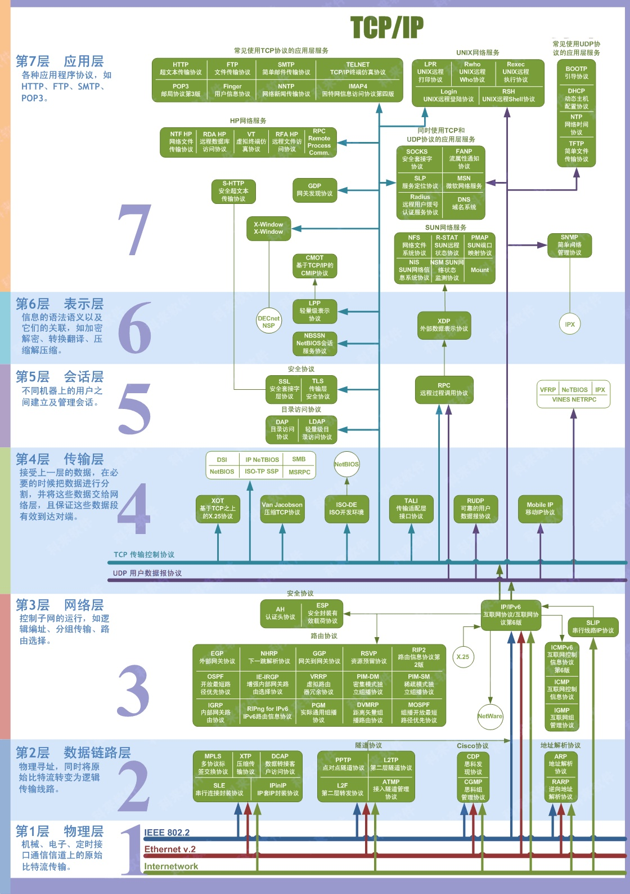

计算机网络复习笔记
本文是我学习谢希仁版《计算机网络》的核心部分笔记。比较全，如果要面向面试的话可以看牛客网上这篇 https://www.nowcoder.com/discuss/429605?type=0&order=7&pos=5&page=1&channel=1000&source_id=discuss_center_0 。WEB安全的内容也是常考点，但我暂时没有整理，面试前要看一下。
第一章 计算机网络概述
重要内容
- 互联网边缘部分和核心部分的作用。
- 分组交换的概念。
- 计算机网络的性能指标。
- 计算机网络的分层次的体系结构的概念、协议和服务。
核心知识点
网络的类别：
- 电信网络
- 有线电视网络
- 计算机网络
互联网的特点：
- 连通性
- 共享性
基本概念：
- 计算机网络：是由分布在不同地理位置，功能独立的多台计算机，使用网络设备和线路连接而成的网络系统，主要目的是信息交换和资源共享。
- 互连网（internet）：使用路由器和线路将多个计算机网络连接起来，构成的覆盖范围更广的网络，叫作互连网，小写字母开头。所以，互连网是“网络的网络”。
- 互联网（Internet）：也称因特网，指当今全球最大的、开放的、由众多网络相互连接而成的特定互连网，它采用TCP/IP协议族作为通信的规则，其前身是美国的ARPANET。
互联网和互连网的区别：
- 互联网是特定的互连网。任意把几个网络通过路由器互连起来，并且能相互通信，这样只是互连网，而不是互联网。
- 互联网必须采用TCP/IP协议族作为通信规则，而互连网可以选用任意的通信协议。
网络由若干节点和连接这些节点的链路组成（节点可以是计算机，集线器，交换机，路由器等）；网络和网络之间通过路由器连接起来，构成了互连网——即网络的网络；因此，网络把许多计算机连接在一起，互连网将许多网络连接在一起。
互联网发展的三个阶段：
- 单个网络APRANET向互连网发展。1969年，美国国防部创建了第一个分组交换网ARPANET，计算机网络诞生。1983年TCP/IP协议成为ARPANET上的标准通信协议，互联网诞生。
- 建成了三级结构的网络，即主干网、地区网、校园网。
- 逐渐形成了多层次ISP结构的互联网。ISP是互联网服务提供者（互联网服务提供商）。

因特网交换点IXP：（更快的转发分组，更有效地利用网络资源）允许两个网络直接相连并交换分组，不需要其他网络来转发分组，IXP常采用工作在数据链路层的网络交换机，这些网络交换机都用局域网互连起来（典型的IXP由一个或多个网络交换机组成）
WWW：万维网，侧重于指互联网上的网页。使用HTTP协议工作。
制定互联网的标准的阶段：
- 互联网草案。
- 建议标准（RFC文档）。
- 互联网标准。
所有互联网标准都是以RFC形式在互联网上发表的。管理互联网的组织是互联网协会ISOC。管理互联网协议开发的组织是互联网体系结构委员会IAB，IAB下辖互联网工程部IETF和互联网研究部IRTF。
互联网的组成：
- 边缘部分：由所有连接在互联网上的主机组成，这部分是用户直接使用的。其目的是进行通信和资源共享。
- 核心部分：由大量网络和连接这些网络的路由器组成。这部分是为边缘部分提供服务的，提供连通性和交换。

端系统之间通信的含义：
- “主机 A 和主机 B 进行通信”实际上是指：“运行在主机 A 上的某个程序和运行在主机 B 上的另一个程序进行通信”。简称：“计算机之间通信”。
端系统的通信方式：
客户端/服务器方式（C/S方式）：一方是客户，一方是服务器。
- 客户端：被用户调用后运行，在打算通信时主动向远地服务器发起通信（请求服务）。因此，客户程序必须知道服务器程序的地址。不需要特殊的硬件和很复杂的操作系统。
- 服务器：一种专门用来提供某种服务的程序，可同时处理多个远地或本地客户的请求。系统启动后即自动调用并一直不断地运行着，被动地等待并接受来自各地的客户的通信请求。因此，服务器程序不需要知道客户程序的地址。一般需要强大的硬件和高级的操作系统支持。

对等连接方式（P2P方式）：本质上看仍然是使用客户服务器方式，只是对等连接中的每一个主机既是客户又是服务器。

互联网的核心部分：
在互联网核心部分中起特殊作用的是路由器，它是一种专用计算机，是实现分组交换的关键构件，作用是按存储转发方式进行分组交换。其任务是转发收到的分组，这是网络核心部分最重要的功能。
交换方式：
- 电路交换：整个报文的比特流连续地从源点直达终点，好像在一个管道中传送。缺点是在通话的全部时间里，通话的两个用户需要始终占用端到端的通信资源。这在计算机网络中效率很低，因为计算机数据往往是突发式的出现在传输线路上的。
- 报文交换：整个报文先传送到相邻结点，全部存储下来后查找转发表，转发到下一个结点。一旦出错将使整个报文失效，不够灵活。
- 分组交换：分组（报文的一部分）先传送到相邻结点，全部存储下来后查找转发表，转发到下一个结点。最终，接收方接收所有的分组，并将其还原为最初的报文。优点是时延小，灵活性好，是计算机网络中最常用的交换方式。

互联网核心部分中的路由器之间一般都用高速链路相连接，而在网络边缘的主机接入到核心部分则通常以相对较低速率的链路相连接。
主机的用途是为用户进行信息处理的，并且可以和其他主机通过网络交换信息。路由器的用途则是用来转发分组的，即进行分组交换的。
计算机网络的定义：
- 计算机网络主要是由一些通用的、可编程（必然含有CPU）的硬件互连而成的，而这些硬件并非专门用来实现某一特定目的（例如，传送数据或视频信号）。这些可编程的硬件能够用来传送多种不同类型的数据，并能支持广泛的和日益增长的应用。
- 计算机网络所连接的硬件，并不限于一般的计算机，而是包括了智能手机。
- 计算机网络并非专门用来传送数据，而是能够支持很多种的应用（包括今后可能出现的各种应用）。
计算机网络的类别：
- 按照作用范围划分：
- 广域网（wide area net，wan）：范围几十到几千公里。
- 城域网（metropolitan area net，man）：范围5-50公里。
- 局域网 LAN (Local Area Network) ：局限在较小的范围（如 1 公里左右）。
- 个人区域网 PAN (Personal Area Network) ：范围很小，大约在 10 米左右。
- 按照网络使用者划分：
- 公用网：所有人都能用。
- 专用网：只有单位内部人员能用。
- 按照作用范围划分：
计算机网络的性能指标：
速率：单位时间内的数据传送速率，也叫数据率或比特率（单位：bit/s)。速率往往是指额定速率或标称速率，非实际运行速率。
带宽：“带宽”(bandwidth) 本来是指信号具有的频带宽度（频域称谓），其单位是赫（或千赫、兆赫、吉赫等）。在计算机网络中，带宽用来表示网络中某通道传送数据的能力。表示在单位时间内网络中的某信道所能通过的“最高数据率”。单位是 bit/s ，即 “比特每秒”。 （时域称谓）
- PS：速率VS.带宽：速率指的是信道传输的标准速率，而带宽指的是最高速率。例如，电信公司安装的宽带，通常会说带宽为100兆，但实际上速率只有10兆左右。
吞吐率：单位时间内通过某个网络（信道、接口）的实际数据量。
时延：数据（一个报文或分组，甚至比特）从网络的一端传到另一端所需要的时间，又称延迟或者迟延。它由四个部分组成：
发送时延：主机或路由器发送数据帧所需要的时间。计算方式为：数据帧长度（bit）除以发送速率（bit/s）
传播时延：电磁波在信道中传输所需的时间。计算方式为：信道长度（m）除以电磁波在信道上的传输速度（m/s）
排队时延：分组在路由器中需要先排队等待处理，再排队等待发送。
处理时延：主机或路由器收到数据帧处理所需要的时间。

时延带宽积：时延乘以带宽。又称以比特为单位的链路长度。
往返时间 RTT：双向交互一次所需要的时间。
利用率：利用率并非越高越好，高利用率会导致高时延（排队理论）。
- 信道利用率：某信道有百分之几的时间是被利用的（有数据通过）。完全空闲的信道的利用率是零。
- 网络利用率：全网络的信道利用率的加权平均值。
计算机网络体系结构：
1974年，美国IBM公司宣布了系统网络体系结构SNA。
1977年，国际标准化组织ISO提出了开放系统互连基本参考模型OSI/RM（Open Systems Interconnection Reference Model)，1983年出台了正式文件，即ISO7498国际标准，将通信协议划分为7层。
由于OSI模型过于复杂，难以市场化，目前主要的国际标准为：TCP/IP。他将计算机网络的通信协议划分为4层。
网络协议：为实现网络中的数据交换而建立的规则标准或约定。
- 三要素：
- 语法：数据与控制信息的格式。
- 语义：需要发出何种控制信息，完成何种动作，做出何种响应。
- 同步：事件实现顺序的详细说明。
- 三要素：
分层的优势：
- 各层独立。
- 灵活性好。
- 结构上可分割开。
- 易于实现与维护。
- 能促进标准化工作。
各层的主要功能：
- 差错控制：使相应层次对等方的通信更加可靠。
- 流量控制：发送端的发送速率必须使接收端来得及接收，不要太快。
- 分段和重装：发送端将要发送的数据块划分为更小的单位，在接收端将其还原。
- 复用和分用：发送端几个高层会话复用一条低层的连接，在接收端再进行分用。
- 连接建立和释放：交换数据前先建立一条逻辑连接，数据传送结束后释放连接。
主要概念：
- 实体：任何可发送或接受信息的硬件或软件进程。
- 协议：控制两个对等实体（或多个实体）进行通信的规则的集合。是水平的。
- 服务：本层服务的实体只能向上一层提供服务，使用下一层的服务。是垂直的。
OSI 的七层协议体系结构的概念清楚，理论也较完整，但它既复杂又不实用。TCP/IP 是四层体系结构：应用层、运输层、网际层和网络接口层。但最下面的网络接口层并没有具体内容。因此往往采取折中的办法，即综合 OSI 和 TCP/IP 的优点，采用一种只有五层协议的体系结构 。

七层协议示意图：

五层协议内容（自顶向下）：
- 应用层：
- 功能：通过应用进程之间的交互来完成特定的网络应用。
- 交换的数据单元：报文。
- 协议：域名系统DNS、支持万维网应用的HTTP协议，支持电子邮件的SMTP等。
- 运输层：
- 功能：负责向两台主机中进程之间的通信提供通用的数据传输服务。具有复用和分用的功能。
- 协议：
- 传输控制协议TCP：提供面向连接的、可靠的数据传输服务。交换的数据单元是：TCP报文段。
- 用户数据报协议UDP：提供无连接的尽最大努力的数据传输服务（不确保数据的可靠性）。交换的数据单元是：用户数据报。
- 不同的应用层协议基于不同的传输层协议。例如：HTTP协议、SMTP协议基于TCP协议，DNS协议、RTP协议基于UDP协议。
- 网络层：
- 功能：为互联网内任意两台主机提供分组交换的通信服务。（路由器是网络层设备）
- 交换数据单元：分组（IP数据报）。
- 协议：网际协议IP。
- 数据链路层：
- 功能：为局域网内任意两台主机提供数据帧传输。
- 交换的数据单元：数据帧。
- 物理层：
- 功能；提供原始的比特流传输。
- 从上至下的每一层的协议数据单元PDU，都在上一层的基础上，加上自己的控制信息。

- 应用层：
TCP/IP协议族：沙漏型，有很多协议，其中最主要的是运输层的TCP协议，网络层的IP协议。
- 两军对垒问题：无法实现100%确保报文正确收到的协议。

第二章 物理层
重要内容
- 物理层的任务
- 几种常用的信道复用技术
- 几种常用的宽带接入技术，主要是ADSL、FTTx
核心知识点
- 物理层的基本功能：提供原始的比特流传输。尽可能地屏蔽掉不同传输媒体和通信手段的差异。
- 物理层的主要任务：
- 确定与传输媒体的接口有关的一些特性，如机械特性、电气特性、功能特性、过程特性。（下层传输媒体不属于物理层，只有接口属于物理层）
- 完成数据在计算机内部（并行传输）与通信线路上（串行传输）之间的串并传输方式的转换。
- 一个数据通信系统可分为：
- 源系统，包括源点和发送器。
- 传输系统。
- 目的系统：包括接收器和终点。

常用概念：
通信的目的是传送消息。
数据是运送消息的实体。数据是使用特定方式表示的信息，通常是有意义的符号序列。
信号则是数据的电气或电磁表现。可分为：
- 模拟信号（连续信号）。
- 数字信号（离散信号）。
信道是向某一个方向传送信息的媒体。
通信可分为:
- 单向通信（单工通信）：只有一个方向的通信。如电视广播。
- 双向交替通信（半双工通信）：通信双方都可以发送消息，但不能同时发送。
- 双向同时通信（全双工通信）：通信双方都可以同时发送消息。
调制：将来自信源的低频甚至直流信号（基带信号）进行变换，使得这种低频直流信号可以便于在信道内传输。基带信号（即基本频带信号）—— 来自信源的信号。像计算机输出的代表各种文字或图像文件的数据信号都属于基带信号。基带信号往往包含有较多的低频成分，甚至有直流成分，而许多信道并不能传输这种低频分量或直流分量。因此必须对基带信号进行调制 (modulation)。
基带调制（编码）：仅对基带信号的波形进行变换，使它能够与信道特性相适应。变换后的信号仍然是基带信号。把这种过程称为编码 (coding)。（数字信号到数字信号）
- 不归零制：正电平代表 1，负电平代表 0。
- 归零制：正脉冲代表 1，负脉冲代表 0。
- 曼彻斯特编码：位周期中心的向上跳变代表 0，位周期中心的向下跳变代表 1。但也可反过来定义。
- 差分曼彻斯特编码：在每一位的中心处始终都有跳变。位开始边界有跳变代表 0，而位开始边界没有跳变代表 1。

带通调制：使用载波进行调制，调制后的信号是模拟信号。（数字信号到模拟信号）
- 调幅AM：载波的振幅随基带数字信号而变化。
- 调频FM：载波的频率随基带数字信号而变化。
- 调相PM：载波的初始相位随基带数字信号而变化。
信噪比：信号的平均功率和噪声的平均功率之比。常记为 S/N，S为信号平均功率，N为噪声平均功率，并用分贝 (dB) 作为度量单位。即：
信噪比(dB) = 10 log10(S/N) (dB)
香农公式：1984年，香农 (Shannon) 用信息论的理论推导出了带宽受限且有高斯白噪声干扰的信道的极限、无差错的信息传输速率（香农公式）。
信道的极限信息传输速率 C 可表达为：
C = W log2(1+S/N) (bit/s)
- W 为信道的带宽（以 Hz 为单位）；
- S 为信道内所传信号的平均功率；
- N 为信道内部的高斯噪声功率。
信道复用技术：允许多个用户使用共享信道通信，降低成本，提高利用率。
- 频分复用FDM：用户在同样的时间内占用不同的频率带宽而复用同一个信道
- 时分复用TDM：将时间划分为相同的时分复用帧TDM，用户在不同的时间占用相同的频带宽度。
- 统计时分复用STDM ：改进的时分复用，按需动态分配时隙，而不是固定分配时隙。
- 波分复用WDM：光的频分复用，利用在光纤技术通信中。
- 码分复用CDM: 每个用户在相同的时间使用相同的频带进行通信，但各用户使用经过挑选的不同码型，从而使得个用户之间可以进行独立的通信。
第三章 数据链路层
重要内容
- 数据链路层点对点信道和广播信道的特点，以及这两种信道使用的协议的特点。
- 数据链路层的三个基本问题：封装成帧、差错检测、透明传输。
- 以太网MAC层的硬件地址。
- 适配器、转发器、集线器、网桥、以太网交换机的作用和使用场合。
核心知识点
数据链路层主要使用两种信道：
- 点对点信道：这种信道使用一对一的点对点通信方式。主要使用PPP协议。
- 广播信道：这种信道使用一对多的广播通信方式，因此过程比较复杂。广播信道上连接的主机很多，因此必须使用专用的共享信道协议来协调这些主机的数据发送。主要使用MAC协议。
数据链路层在分组交换中的地位：

可以看到，路由器是互联网核心部分的最重要设备，但是不包含运输层和应用层，只负责以IP数据报（分组）的形式转发收到的分组。
数据链路层的主要功能：局域网内主机之间的数据帧传输。
数据链路层的主要概念：
- 链路：又称物理链路，是一条无源的点到点的物理线路段，中间没有任何其他的交换结点。一条链路只是一条通路的一个组成部分。
- 数据链路：又称数据链路，是物理链路加上必要的通信协议控制数据的传输。通常使用网络适配器来实现这些通信协议。
- 协议数据单元：数据链路层的协议数据单元是数据帧，简称帧。
主要任务：
- 将网络层的IP数据报加上数据链路层的控制信息，封装成帧，通过物理层发送到数据链路上。（对下层的服务）
- 从物理层传输的帧中提取IP数据报内容，交给网络层。（对上层的服务）
数据链路层的3个基本问题：
封装成帧：将IP数据报作为帧的数据部分，再加上首部和尾部，即可封装成帧。
作用：
- 帧定界：采用SOH、EOT帧定界符，放在帧的前后，标志帧的边界。可能存在歧义的问题，因为数据中也可能出现SOH、EOT，所以需要转义（字符填充）。
- MTU：最大传送单元，表示帧的数据部分（IP数据报）的最大长度，为1500字节。（PPP协议：加上8个字节的首部和尾部，帧的最大长度为1508字节。MAC协议：加上18个字节的首部和尾部，帧的最大长度为1518字节。）

透明传输：在数据链路层传输时，所传输的数据在数据链路层没有任何的阻挡，接收方所收到的数据和发送方发送的数据没有任何差别，也就是说，数据链路层对其传输的数据帧是完全透明的。
存在的问题：如果数据中的某个字节的二进制代码恰好和 SOH 或 EOT 一样，数据链路层就会错误地“找到帧的边界”。

解决方案——字节填充（也称字符填充）：传输的过程中，为防止数据部分出现帧定界符，使得接收方误以为收到的数据提前结束，所以采用转义字符的方法，将在数据部分出现的控制字符前插入转义字符“ESC”，在接收方的数据链路层将插入的转义字符删除。（如果原字节流中已经存在转义字符，则需要再加上一个转义字符。）（字节填充用于并行传输，即异步传输，一个字节一个字节传输，如果使用的是同步传输，即连续的比特流传输，需要使用零比特填充）

差错检测：数据链路层的差错检测只能保证帧内部无差错，即无比特差错。帧之间的差错，如帧丢失、帧冗余、帧失序，通常交给TCP协议（运输层）来保证（可靠的，面向连接）。
比特差错：物理层传输时，比特可能出现错误，比如比特丢失，比特冗余，比特失序。
误码率BER：在单位时间内，传输错误的比特占所有比特的比率就是误码率。
循环冗余检验 CRC ：
在发送端，先把比特数据划分为组。假定每组数据M长度为 k 个比特。
根据生成多项式（如$x^5+x^3+1$）获取除数P（101001）。
在数据M的尾部加上n个0作为被除数（n的位数比p小1）。
将被除数除以除数P（模二运算），得到余数R，R即为帧检测序列FCS，将其添加到M的尾部发送出去。
检验方法：在接收端将收到的数据除以除数P，看余数是否等于0，等于0则认为帧没有差错，进行接收；否则出错，进行丢弃。（只能保证无差错接收，如果要保证无差错传输，还需要加上确认和重传机制）
CRC与FCS的区别：
- CRC 是一种常用的检错方法，而 FCS 是添加在数据后面的冗余码。
- FCS 可以用 CRC 这种方法得出，但 CRC 并非用来获得 FCS 的唯一方法。
差错纠正：还要知道差错的位置并进行修改，在数据链路层确保可靠传输，一般用于无线传输链路。有线传输链路一般只进行差错检测，只是简单地丢弃出错的帧，差错纠正一般由上层协议（如运输层的TCP协议）完成（网络层一般不提供可靠服务）。
PPP点对点协议：最常用的点对点（一对一）链路的数据链路层协议。是端计算机和ISP进行通信时所使用的数据链路层协议（拨号上网）。
特点：
- 简单 —— 这是首要的要求。
- 封装成帧 —— 必须规定特殊的字符作为帧定界符。
- 透明性 —— 必须保证数据传输的透明性。
- 多种网络层协议 —— 能够在同一条物理链路上同时支持多种网络层协议。
- 多种类型链路 —— 能够在多种类型的链路上运行。
- 差错检测 —— 能够对接收端收到的帧进行检测，并立即丢弃有差错的帧。
- 检测连接状态 —— 能够及时自动检测出链路是否处于正常工作状态。
- 最大传送单元 —— 必须对每一种类型的点对点链路设置最大传送单元 MTU 的标准默认值，促进各种实现之间的互操作性。
- 网络层地址协商 —— 必须提供一种机制使通信的两个网络层实体能够通过协商知道或能够配置彼此的网络层地址。
- 数据压缩协商 —— 必须提供一种方法来协商使用数据压缩算法。
组成：
- 一个将IP数据报封装到串行链路的方法（封装成帧）。
- 一个用来建立、配置和测试数据链路连接的链路控制协议LCP。
- 一套网络控制协议NCP。
PPP帧的格式：

- 控制字段总长度：8个字节。
- PPP 是面向字节的，所有的 PPP 帧的长度都是整数字节。
- 字段含义：
- F（1字节）：标志字段，代表定界符。
- A、C（1字节）：A为地址字段，C为控制字段，但暂时没有含义。
- 协议字段（2字节）：表示当前信息部分是IP数据报还是LCP的控制数据还是NCP的控制数据。
- FCS（2字节）：帧检测序列，用于差错检测中的循环冗余检测CRC方法。
透明传输问题：
字节填充：
- 使用场景：PPP使用异步传输，即一个字节一个字节传输。
- 实现方式：软件。
- 做法：当信息字段中出现和标志字段相同的比特组合时，则进行字节填充的办法使得数据部分能够完整的传送到接收端。（添加转义字符）
零比特填充：
- 使用场景：PPP使用同步传输，即连续的比特流传输。
- 实现方式：硬件。
- 做法：当信息字段出现了5个连续的1，那么就插入一个0，在接收时再将5个连续的1后的0删除。

PPP协议的工作状态：用户拨号接入ISP→端机向ISP发送一系列链路控制协议LCP分组→进行网络层配置→网络层协议NCP向端机分配IP地址。（可见，PPP 协议已不是纯粹的数据链路层的协议，它还包含了物理层和网络层的内容。)

使用广播信道的数据链路层（一对多）：
使用场景：局域网（点对点是端主机同ISP进行通信，拨号上网时使用的）,也称以太网（Ethernet）
局域网的优点：
- 广播功能。从一个站点可很方便地访问全网。局域网上的主机可共享连接在局域网上的各种硬件和软件资源。
- 便于系统的扩展和演变。
- 提高了系统的可用性、可靠性和生存性。
局域网的拓扑结构：
星形网：目前最常用。

环形网

总线网：传统局域网常用。

树形网
网状结构
以太网的两个标准：
- DIX Ethernet V2 是世界上第一个局域网产品（以太网）的规约。
- IEEE 802.3 是第一个 IEEE 的以太网标准。
局域网的数据链路层的子层：为了使数据链路层能更好地适应多种局域网标准，IEEE 802 委员会就将局域网的数据链路层拆成两个子层。
- 逻辑链路控制层 LLC （Logical Link Control）子层
- 媒体接入控制 MAC（Medium Access Control）子层
- 与接入到传输媒体有关的内容都放在 MAC子层，而 LLC 子层则与传输媒体无关。
共享信道：由于局域网使用的是广播信道，所以需要媒体共享技术，防止因为共享信道产生的错误。
- 静态划分信道：用户一旦分到信道，就不会和其他用户发生冲突，如频分复用、时分复用、码分复用、波分复用等。缺点是：代价高、效率低、不适用于局域网。特点：固定分配。
- 动态媒体接入控制：信道并非在通信时固定分配给用户。特点：动态分配。
- 随机接入：所有用户可以在信道中随机地发送信息，占用此信道，而不用遵守静态划分的某种规则。但如果多个用户在同一时间发送信息，那么共享媒体就会产生碰撞，所有的用户发送都失败。（需要控制协议：CSMA/CD协议）
- 受控接入。多点线路探询 (polling)，或轮询。
CSMA/CD协议：即载波监听多点接入碰撞检测协议。在广播信道中实现动态媒体共享技术的随机接入必须使用的控制协议，确保不会有多个站点发送的信息同时出现在总线上。
- 要点：
- 载波监听（Carrier Sense）：利用电子技术检测总线上有没有其他计算机也在发送。不管在发送前还是发送中，每个站都必须不停地检测信道，以防止出现碰撞（发送前），检测碰撞发生并及时丢弃信息（发送中，由于发送的不确定性，发送前检测不能百分百防止碰撞，因为存在传播时延）。
- 多点接入（Multiple Access）：说明这是总线型网络（传统以太网），计算机以多点接入的方式连接。实际上，星形网也可以采用类似的方式进行随机接入，本质类似。
- 碰撞检测（Collision Detection）：边发送边监听。 若在信道上有至少两个站点同时发送信息便发生碰撞，这时很容易信号失真，要使两边发送的信息都作废。
- 使用CSMA/CD协议的局域网的站不能同时进行发送和接收，所以只能进行半双工通信（双向交替通信）。
- 发送的不确定性：由于电磁波的传播时延，每个站发送数据后的一小段时间内，可能会有其他站无法及时检测到信道上已有数据在发送，从而发送数据，产生碰撞。
- 解决方案：争用期，又叫碰撞窗口。即以太网的端到端往返时间。如果一个站发送数据后，在碰撞窗口内没有检测到碰撞，才能确定这次发送不会产生碰撞。通常规定为512比特时间，即64字节时间。
- 重传机制：截断二进制指数退避算法。使发生碰撞的站再次发生冲突的概率减小。
- 发生碰撞的站在停止发送数据后，要推迟（退避）一个随机时间才能再发送数据。
- K=MIN[10，重传次数]，每次重传时每个站从[0,1,…,2的K次方-1]中随机选一个数字r，重传推后的时间为r倍争用期。
- 重传达到16次时，则站丢弃该帧，并向高层报告。
- 帧的最小长度：以太网规定有效帧的最小长度为64字节（512bit），即争用期内发送的字节数。如果接收到的某个帧长度小于64字节，说明它在争用期内出现问题，需要丢弃，大于等于64字节说明该帧通过了争用期，不会再出现问题。
- 帧间最小间隔：96bit时间，使刚刚收到数据帧的站的缓存来得及清理，做好接受下一帧的准备。
- 强化碰撞：在发生碰撞之后除了立即停止发送数据之外，还要发送32bit或48bit 的人为干扰信号，目的是为了能够让所有站点都知道发生了碰撞。
- 要点：
- 要点：
网络适配器（网卡）的作用：
- 适配器用来连接计算机与局域网；同时要能够实现以太网协议；
- 适配器和局域网之间的通信是通过双绞线或者电缆以串行传输的方式进行的；而适配器与计算机之间的通信是并行方式进行的，所以适配器要能够进行两种数据传送方式之间的串并行转化；
- 网络上的数据率与计算机总线上的数据率不同，因此适配器要安装内存储器以进行两种速率下的缓存功能
- 适配器要能够实现以太网协议
- 计算机的硬件地址（MAC地址）就在适配器的ROM中；（计算机的软件地址IP地址，在计算机的存储器中）

使用集线器的星形拓扑：
- 双绞线以太网的出现，是局域网发展史上的一个重要的里程碑，从此以太网的拓扑结构从传统的总线型变为更为方便的星形网络。
- 优势：
- 价格便宜；
- 使用方便。
- 特点：
- 集线器使用电子器件模拟实际电缆线的工作，所以使用集线器的以太网在逻辑上还是一个总线网，各站逻辑上共享总线。而且是用的还是CSMA/CD协议，同一时刻至多允许一个站发送数据（防止碰撞）；
- 集线器的接口通过两对双绞线与计算机上的适配器相连；一个集线器像是一个多接口的转发器；
- 集线器工作在物理层，每个接口只简单地转发比特，不进行碰撞检测；
- 集线器采用专门的芯片，进行自适应串音回波抵消。
局域网数据链路层的子层——媒体接入控制层MAC层：
- 硬件地址（物理地址或MAC地址）：IEEE802为局域网规定了一种48位的全球地址，是指局域网上每台计算机中固化在适配器（网卡）的ROM中的地址。（软件地址是IP地址，计算机的硬件地址只要适配器不更换，就不会改变，而软件地址可以随时变更）。总共48位（6字节）前三字节由管理全球硬件地址的机构——注册管理机构RA向适配器制造公司出售称为组织唯一标识符OUI，后三字节由制造公司自行分配，称为扩展标识符，（其中前三字节中有两位是用来标识是否位单播地址和是否属于全球管理的）。
- MAC帧的格式：
- 前两个字段为6字节的目的地址和6字节的源地址。第三个字段为2字节的类型字段，表示上一层的协议。第四个字段是数据字段，长度为46到1500字节，一般是网络层交付的IP数据报。第五个字段是长度为4个字节的帧检测序列FCS。
- MAC帧的长度范围是：64字节到1518字节。首尾部分的控制信息占18字节。其中，64字节的最小长度是CSMA/CD协议的规定（确保通过争用期）
- 当MAC帧向下交付给物理层时，需要加上7个字节的前同步码（实现发送端和接收端之间的位同步）和1个字节的帧开始定界符（无结束定界符，直接观察曼彻斯特编码即可）。
- MAC帧中并没有数据长度的标识，但由于传输时使用的是曼彻斯特编码的方式，所以通过对曼彻斯特编码的信号特点的观察便可确定是否传送完毕；（曼彻斯特编码信号的码元正中间有一次电压转换）
- 对于检查出的无效 MAC 帧就简单地丢弃。以太网不负责重传丢弃的帧。

以太网的扩展:
- 在物理层扩展以太网
- 在数据链路层扩展以太网
- 通过网桥扩展以太网
- 通过以太网交换机扩展
- 虚拟局域网
(集线器是物理层设备，网桥是数据链路层设备)
第四章 网络层
重要内容
- 虚拟互联网的概念
- IP地址与物理地址的关系
- 传统的分类的IP地址（包括子网掩码）和无分类域间路由选择
- 路由选择协议的工作方式
核心知识点
网络层的功能：
- 网络层面向无连接，不负责提供可靠的服务。将确保数据可靠的任务交给了上层的运输层（TCP协议）。
- 数据链路层是局域网内，而网络层将范围扩大至互联网，即世界上最大的互连网。负责为互联网上任意两台主机提供分组交换服务。
网络层向上只提供简单灵活的、无连接的、尽最大努力交付的数据报服务。不提供服务质量的承诺，使路由器比较简单。
- 原因：计算机网络的端系统是具有智能的计算机，具有很强的差错处理能力。而传统电信网络的端系统是电话机，没有差错处理能力，所以要将确保可靠的任务交给网络层。
- 优点：网络造价大大降低，运行方式灵活，能够适应多种应用。
- 如果主机（即端系统）中的进程之间的通信需要是可靠的，那么就由网络的主机中的运输层负责可靠交付（包括差错处理、流量控制等） 。

主要协议：
- 网际协议IP（Internet Protocol）：Robert Kahn和Vint Cerf共同研发。
- 地址解析协议ARP（Address Resolvotion Protocol）。
- 网际控制报文协议ICMP（Internet Control Message Protocol）。
- 网际组管理协议IGMP（Internet Group Management Protocol）。
虚拟互联网络的概念：
- 即逻辑互联网络,忽略物理层的客观异构性,在网络层看起来好像是一个统一的网络,即互联网可以有多种异构的网络组成。（就像操作系统的逻辑设备一样，屏蔽差异）如果在这种覆盖全球的 IP 网的上层使用 TCP 协议，那么就是现在的互联网 (Internet)。
- 网络互联的一些中间设备：
- 物理层：转发器、集线器
- 数据链路层：网桥（扩展局域网）
- 网络层：路由器（连接局域网）
- 网络层以上：网关、桥路器
IP地址（RFC 791）:
IP地址是给互联网上每一个主机（或路由器）的每一个接口分配一个在全世界范围内是唯一的32位（IPV4）的标识符。（MAC地址对每个计算机是固定的，IP地址不固定）。IP 地址现在由互联网名字和数字分配机构ICANN进行分配。每台主机或者路由器可以有多个IP地址。
历史阶段：
- 分类的IP地址；
- 子网的划分；
- 构成超网。
组成：网络号net-id+主机号host-id。
- A类地址：8位网络号，第一位是标识位0；24位主机号。
- B类地址：16位网络号，前两位是标识位10；16位主机号。
- C类地址：24位网络号，前三位是标识位110；8位主机号。
- D类地址：前四位是标识位1110，用于一对多通信。
- E类地址：前四位是标识位1111，留作以后使用。

IP地址的表示方法：点分十进制。每8个二进制转换为一个三位十进制数（0-255），插入一个点。IP地址在计算机中以二进制形式存储，但为了方便人类记忆，采用点分十进制的形式表示。

IP地址的指派范围：
- A类地址网络号占用一个字节，但是由于有一位是类别位，只有7位可供使用，但是由于规定，网络字段全0是个保留字段表示本网络，而127（01111111）是另外一个保留字段，作为本地软件的环回测试。我们常见的127.0.0.1表示本机，原因也是出自这里。所以A类地址可以指派的网络号个数为（2^7-2）.
- B类网络地址网络号有两个字节，前两位为10已经固定，只剩下14位可用，由于这14位无论怎么取值都不会使得网络号为全0或者全1，但实际上规定，规定B类最小网络地址为128.1.0.0。因此B类地址可指派的网络号个数为（2^14-1）.
- C类地址有3个字节的网络字段号，前三位固定110，只有剩下21位可用，同样C类地址可指派的最小网络地址也是192.0.1.0。因此C类地址可指派的网络号个数为（2^21-1）.
- A、B、C三类地址的主机号，全0或全1均有特殊作用，分别表示本主机和当前网络内全部主机，所以可用的主机号为（2^（n-1））。

一般不使用的特殊IP地址：
- 网络号全0：当前网络。
- 网络号全1：在本网络上进行广播。
- 网络号127：用于本地环回测试（自己连接自己）。
- 主机号全0：当前主机。
- 主机号全1：所有主机。

IP地址的重要特点：
- IP地址是一种分等级的地址结构。好处是：
- IP 地址管理机构在分配 IP 地址时只分配网络号，而剩下的主机号则由得到该网络号的单位自行分配。这样就方便了 IP 地址的管理。
- 路由器仅根据目的主机所连接的网络号来转发分组（而不考虑目的主机号），这样就可以使路由表中的项目数大幅度减少，从而减小了路由表所占的存储空间。 （转发到目的网络后，由目的网络的路由器转发至具体的主机）
- 实际上 IP 地址是标志一个主机（或路由器）和一条链路的接口。
- 多归属主机：当一个主机同时连接到两个网络上时，该主机就必须同时具有两个相应的 IP 地址，其网络号 net-id 必须是不同的。
- 路由器：由于一个路由器至少应当连接到两个网络（这样它才能将 IP 数据报从一个网络转发到另一个网络），因此一个路由器至少应当有两个不同的 IP 地址。
- 用转发器（物理层）或网桥（数据链路层）连接起来的若干个局域网仍为一个网络，因此这些局域网都具有同样的网络号 net-id。（网络层的路由器才是连接不同网络的中继系统）前者仅仅是扩展局域网，后者是连通局域网。
- 所有分配到网络号 net-id 的网络，无论是范围很小的局域网，还是可能覆盖很大地理范围的广域网，都是平等的。
- IP地址是一种分等级的地址结构。好处是：
IP地址与硬件地址的区别：
- 硬件地址（或物理地址、MAC地址）是数据链路层和物理层使用的地址。而IP 地址是网络层和以上各层使用的地址，是一种逻辑地址（称 IP 地址是逻辑地址是因为 IP 地址是用软件实现的）
- IP 地址放在 IP 数据报的首部，而硬件地址则放在 MAC 帧的首部。当已知主机或路由器的IP地址后，需要通过ARP地址解析协议得出其MAC地址。
- 网络层只能看见IP地址，数据链路层只能看见硬件地址。
- 分组每次经过路由器转发时都要将MAC帧的首部和尾部丢弃重新封装——变换MAC帧中的目的MAC地址和源MAC地址。而IP数据报中的源IP地址和目的IP地址始终不变。

地址解析协议ARP：
ARP 作用：从网络层使用的 IP 地址，解析出在数据链路层使用的硬件地址。
ARP高速缓存：每一个主机都设有一个 ARP 高速缓存 (ARP cache)，里面有所在的局域网上的各主机和路由器的 IP 地址到硬件地址的映射表，条目为< IP address；MAC address；TTL >，其中TTL为地址映射有效时间 。ARP高速缓存动态更新。
ARP流程：
- 当主机 A 欲向本局域网上的某个主机 B 发送 IP 数据报时，就先在其 ARP 高速缓存中查看有无主机 B 的 IP 地址。
- 如有，就可查出其对应的硬件地址，再将此硬件地址写入 MAC 帧，然后通过局域网将该 MAC 帧发往此硬件地址。
- 如没有， ARP 进程在本局域网上广播发送一个 ARP 请求分组。收到 ARP 响应分组后，将得到的 IP 地址到硬件地址的映射写入 ARP 高速缓存。并写入MAC帧进行发送。
要点：
- ARP请求分组：包含发送方硬件地址 / 发送方 IP 地址 / 目标方硬件地址(未知时填 0，由接收方填写) / 目标方 IP 地址。
- ARP 响应分组：包含发送方硬件地址 / 发送方 IP地址 / 目标方硬件地址 / 目标方 IP 地址。
- ARP 分组封装在物理网络的帧中传输。
- 本地广播 ARP 请求（路由器不转发ARP请求）。ARP 是解决同一个局域网上的主机或路由器的 IP 地址和硬件地址的映射问题。一个主机想解析出另一个局域网上主机的MAC地址，需要先通过ARP找到当前局域网的一个路由器的MAC地址并发送，再通过它的转发表层层进行ARP操作并转发，直到找到目的主机所在的网络的一个路由器，由它广播ARP请求分组，获取目的主机的硬件地址。
- 从硬件地址到IP地址的解析每次转发分组时都要重复进行，但这种开销是不可避免的，是为方便的在各种异构网络之间进行转发工作而屏蔽网络硬件之间的异构性，从而体现出虚拟网络的含义。
- 为什么不统一使用硬件地址进行通信？由于全世界存在着各式各样的网络，它们使用不同的硬件地址。要使这些异构网络能够互相通信就必须进行非常复杂的硬件地址转换工作，因此几乎是不可能的事。IP 编址把这个复杂问题解决了。因此，在虚拟的 IP 网络上用 IP 地址进行通信给广大的计算机用户带来了很大的方便。（IP地址是虚拟网络的重要手段，屏蔽了不同网络之间的硬件地址差异）
IP数据报（又称分组）：
由首部和数据部分组成。首部固定长度为20字节，此外还可加入长度可变的可选字段，总长度必须是4字节的倍数，最大为60字节。数据报总长度最大不能超过数据链路层协议规定的最大传送单元MTU，即1500字节，否则需要进行分片处理。

首部固定字段：
版本——占 4 位，指 IP 协议的版本。目前的 IP 协议版本号为 4 (即 IPv4)。
首部长度——占 4 位，可表示的最大数值是 15 个单位(一个单位为 4 字节)，因此 IP 的首部长度的最大值是 60 字节。（最小值为固定长度20字节）
区分服务——占 8 位，用来获得更好的服务。只有在使用区分服务（DiffServ）时，这个字段才起作用。在一般的情况下都不使用这个字段 。
总长度——占 16 位，指首部和数据之和的长度，单位为字节，因此数据报的理论最大长度为 65535 字节。但实际上，总长度必须不超过最大传送单元 MTU，否则需要分片。例如，以太网的MTU规定为1500字节。
标识(identification) ——占 16 位，它是一个计数器，用来产生 IP 数据报的标识。作用是：分片时，为各数据报片设定一个标识，相同标识的数据报片最终可被重新拼接起来。
标志(flag) ——占 3 位，目前只有低两位有意义。同样是为了分片。
- 标志字段的最低位是 MF (More Fragment)。MF=1 表示后面“还有分片”。MF=0 表示最后一个分片。
- 标志字段中间的一位是 DF (Don’t Fragment) 。只有当 DF=0 时才允许分片。
片偏移——占13 位，指出：较长的分组在分片后某片在原分组中的相对位置。片偏移以 8 个字节为偏移单位，除最后一个数据报片外，所有数据报片的长度都是8字节的倍数。保证最后数据报片可按照正确的顺序拼接回来。
- 各片可以继承原IP数据报的首部，但必须更改以下字段：
- 修改各数据报片的总长度字段。
- 修改各数据报片的标识字段。
- 修改各数据报片的片偏移字段。
- 修改各数据报片的标志字段。


- 各片可以继承原IP数据报的首部，但必须更改以下字段：
协议——占8 位，指出此数据报携带的数据使用何种协议（TCP/UDP），以便目的主机的 IP 层将数据部分上交给那个处理过程。
生存时间——占8 位，记为 TTL (Time To Live)，指示数据报在网络中可通过的路由器数的最大值。
首部检验和——占16 位，为了减少工作量，只检验数据报的首部，不检验数据部分。这里不采用 CRC 检验码而采用简单的计算方法
- 方法：IP 数据报首部检验和的计算采用 16 位二进制反码求和算法
- 过程：在发送方将IP数据报的首部划分为许多16位的字序列；并把检验和字段置零，用反码运算术将字相加之后，将得到的和的反码写入检验和位置；在接受方接收到数据报之后，使用相同的方法将首部所有的字（包括检验和）相加一次，若没有出错则得到的结果必然为零，最后的结果便可作为是否出错的判断标志；
- 反码运算：在普通的二进制加法的基础上，最高位如果产生进位，需要将最后的结果加1。
源IP地址和目的IP地址都各占 4 字节，32位。
首部可变字段：IP 首部的可变部分就是一个选项字段，用来支持排错、测量以及安全等措施，内容很丰富。0到40字节。
网络层转发分组的流程：
每一台主机都有一个路由表。按主机所在的网络地址来制作路由表.
在路由表中，对每一条路由，最主要的是（目的网络地址，下一跳地址）。具体如何选择路径需要依据路由选择协议，如内部网关协议RIP或OSPF。
根据目的网络地址就能确定下一跳路由器，这样做的结果是：
- IP 数据报最终一定可以找到目的主机所在目的网络上的路由器（可能要通过多次的间接交付）。
- 只有到达最后一个路由器时，才试图向目的主机进行直接交付。

特定主机路由：虽然互联网所有的分组转发都是基于目的主机所在的网络，但在大多数情况下都允许有这样的特例，即为特定的目的主机指明一个路由。采用特定主机路由可使网络管理人员能更方便地控制网络和测试网络，同时也可在需要考虑某种安全问题时采用这种特定主机路由。
默认路由：路由器还可采用默认路由以减少路由表所占用的空间和搜索路由表所用的时间。

每一次转发分组时，IP数据报中的IP源、目的地址不变，变的只是MAC地址。路由器的网络接口软件使用 ARP 负责将下一跳路由器的 IP 地址转换成硬件地址，并将此硬件地址放在链路层的 MAC 帧的首部，然后根据这个硬件地址找到下一跳路由器。
路由器分组转发算法：
- 从数据报的首部提取目的主机的 IP 地址 D, 根据子网掩码得出目的网络地址为 N。
- 若网络 N 与此路由器直接相连，则把数据报直接交付目的主机 D；否则是间接交付，执行 (3)。
- 若路由表中有目的地址为 D 的特定主机路由，则把数据报传送给路由表中所指明的下一跳路由器；否则，执行 (4)。
- 若路由表中有到达网络 N 的路由，则把数据报传送给路由表指明的下一跳路由器；否则，执行 (5)。
- 若路由表中有一个默认路由，则把数据报传送给路由表中所指明的默认路由器；否则，执行 (6)。
- 报告转发分组出错。
路由表的作用：指出到某个网络应当先到某个路由器（即下一跳路由器）。它没有给分组指明到某个网络的完整路径，而是指引分组一步步进行查找和转发，直到到达目的网络。
划分子网：
从两级 IP 地址（网络号+主机号）到三级 IP 地址（网络号+子网号+主机号）
- 原因：在 ARPANET 的早期，IP 地址的设计确实不够合理：
- IP 地址空间的利用率有时很低。
- 给每一个物理网络分配一个网络号会使路由表变得太大因而使网络性能变坏
- 两级的 IP 地址不够灵活
- 从 1985 年起在 IP 地址中又增加了一个“子网号字段”，使两级的 IP 地址变成为三级的 IP 地址。
- 原因：在 ARPANET 的早期，IP 地址的设计确实不够合理：
划分子网纯属一个单位内部的事情。单位对外仍然表现为没有划分子网的网络。子网对外部透明。外部主机只需要将IP数据报发送给该单位的网络，发送到具体的子网由该单位自己负责。
方法：从主机号借用若干个位作为子网号 subnet-id，而主机号 host-id 也就相应减少了若干个位。凡是从其他网络发送给本单位某个主机的 IP 数据报，仍然是根据 IP 数据报的目的网络号 net-id，先找到连接在本单位网络上的路由器。然后此路由器在收到 IP 数据报后，再按目的网络号 net-id 和子网号 subnet-id 找到目的子网。最后就将 IP 数据报直接交付目的主机。（子网号全0或者全1表示特殊含义，所以n位的子网号，对应的子网数目为$2^{n-1}$。

优点
- 减少了 IP 地址的浪费
- 使网络的组织更加灵活
- 更便于维护和管理
子网掩码：存放在路由器中，路由器在与相邻路由器交换信息时，需要给出所在网络的子网掩码，路由表中每一个目的网络地址后面也需要给出该目的网络的子网掩码。
规则：
- 子网掩码长度 ＝ 32 位（IPv4）
- 某位 ＝ 1：IP地址中的对应位为网络号和子网号
- 某位 ＝ 0：IP地址中的对应位为主机号
使用时，计算机将子网掩码和目的地址进行按位与运算。

划分方法：
- 固定长度子网：所有子网的子网掩码都是相同的。
- 变长子网
划分子网增加了灵活性，但却减少了能够连接在网络上的主机总数。（每个子网的主机号全0或全1均保留）
ICMP协议：网际控制报文协议Internet Control Message Protocol
ICMP允许主机或路由器报告差错情况和提供有关异常情况的报告。从而更有效地转发IP数据报和提高交付成功的机会。

ICMP属于网络层协议，ICMP报文存在于IP数据报的数据部分。ICMP报文分为差错报告报文和询问报文。
ICMP差错报告报文：
- 类型：
- 终点不可达
- 时间超过
- 参数问题
- 改变路由（重定向）(Redirect)（存在更好的路径）
- 首部8个字节，数据部分为需要进行差错报告的IP数据报的首部和数据部分前8个字节。
- 类型：
ICMP 询问报文：
- 回送请求和回答报文（PING命令）
- 时间戳请求和回答报文
ICMP举例：
PING：用来测试两个主机之间的连通性。PING 使用了 ICMP 回送请求与回送回答报文。PING 是应用层直接使用网络层 ICMP 的例子，它没有通过运输层的 TCP 或UDP。

Traceroute：Windows 操作系统中这个命令是 tracert。用来跟踪一个分组从源点到终点的路径。它利用 IP 数据报中的 TTL 字段和 ICMP 时间超过差错报告报文实现对从源点到终点的路径的跟踪。
互联网的路由选择协议：
路由route：为分组找路径。
理想的路由算法：
- 算法必须是正确的和完整的。
- 算法在计算上应简单。
- 算法应能适应通信量和网络拓扑的变化，这就是说，要有自适应性。
- 算法应具有稳定性。
- 算法应是公平的。
- 算法应是最佳的。
按照路由选择算法是否能随着网络的通信量或者拓扑自适应地进行调整变化来划分：
- 静态路由选择策略——即非自适应路由选择，其特点是简单和开销较小，但不能及时适应网络状态的变化。
- 动态路由选择策略——即自适应路由选择，其特点是能较好地适应网络状态的变化，但实现起来较为复杂，开销也比较大。、、
互联网采用自适应的（动态）、分层次的路由选择协议。
- 互联网的规模非常大。如果让所有的路由器知道所有的网络应怎样到达，则这种路由表将非常大，处理起来也太花时间。而所有这些路由器之间交换路由信息所需的带宽就会使互联网的通信链路饱和。
- 许多单位不愿意外界了解自己单位网络的布局细节和本部门所采用的路由选择协议（这属于本部门内部的事情），但同时还希望连接到互联网上。
自治系统AS Autonomous System **：在单一的技术管理下的一组路由器，而这些路由器使用一种 AS 内部的路由选择协议（如RIP和OSPF）和共同的度量以确定分组在该 AS 内的路由，同时还使用一种 AS 之间的路由选择协议（如BGP-4）用以确定分组在 AS之间的路由。一个 AS 对其他 AS 表现出的是一个单一的和一致的路由选择策略。（自治系统相连采用的是网关Gateway）**

内部网关协议 IGP (Interior Gateway Protocol) （自治系统内部）
- 在一个自治系统内部使用的路由选择协议。
- 目前这类路由选择协议使用得最多，如 RIP 和 OSPF 协议。
外部网关协议 EGP (External Gateway Protocol) （自治系统之间）
- 若源站和目的站处在不同的自治系统中，当数据报传到一个自治系统的边界时，就需要使用一种协议将路由选择信息传递到另一个自治系统中。这样的协议就是外部网关协议 EGP。
- 在外部网关协议中目前使用最多的是 BGP-4。
内部网关协议 RIP（路由信息协议）
路由信息协议 RIP (Routing Information Protocol) 是内部网关协议 IGP 中最先得到广泛使用的协议。
RIP 是一种分布式的、基于距离向量的路由选择协议。
RIP 协议要求网络中的每一个路由器都要维护从它自己到其他每一个目的网络的距离记录。
RIP中的距离也称为“跳数”(hop count)，因为每经过一个路由器，跳数就加 1。直接相连的路由器跳数为1。
RIP 认为一个好的路由就是它通过的路由器的数目少，即“距离短”。（但其实不一定，有的路径可能速度更快但路由数较多）
RIP 允许一条路径最多只能包含 15 个路由器。“距离”的最大值为 16 时即相当于不可达。可见 RIP 只适用于小型互联网。
RIP协议的特点：
- 仅和相邻路由器交换信息。
- 交换的信息是当前本路由器所知道的全部信息，即自己的路由表。
- 按固定的时间间隔交换路由信息，例如，每隔 30 秒。当网络拓扑发生变化时，路由器也及时向相邻路由器通告拓扑变化后的路由信息。
路由器在刚刚开始工作时，只知道到直接连接的网络的距离（此距离定义为 1）。它的路由表是空的。经过若干次交换信息和更新后，所有的路由器最终都会知道到达本自治系统中任何一个网络的最短距离和下一跳路由器的地址。这个若干次更新的过程即为RIP的收敛。
RIP协议的路由器之间交换信息的方式是：RIP报文。它使用运输层的用户数据报协议UDP进行传送。
RIP协议的更新路由表算法：距离向量算法：
- 路由器收到相邻路由器（其地址为 X）的一个 RIP 报文。
- 先修改此 RIP 报文中的所有项目：把“下一跳”字段中的地址都改为 X，并把所有的“距离”字段的值加 1。
- 对修改后的 RIP 报文中的每一个项目，重复以下步骤：
- 若项目中的目的网络不在路由表中，则把该项目加到路由表中。（新的目的网络）
- 否则：
- 若下一跳字段给出的路由器地址是同样的，则把收到的项目替换原路由表中的项目。（网络动态更新后的最新的消息）
- 否则：
- 若收到项目中的距离小于路由表中的距离，则进行更新（更好的路径）
- 否则，什么也不做。
- 若 3 分钟还没有收到相邻路由器的更新路由表，则把此相邻路由器记为不可达路由器，即将距离置为 16（表示不可达）。
- 返回。
距离向量算法的基础就是 Bellman-Ford 算法（SPFA算法前身）
RIP 协议特点：好消息传播得快，坏消息传播得慢。当网络出现故障时，要经过比较长的时间 (例如数分钟) 才能将此信息传送到所有的路由器。（故障的链路对路由表的修改在还未发送出去时，可能被收到的相邻路由器尚未更新的路由表信息覆盖掉）
优点：
- 实现简单，开销较小。
缺点：
- RIP 限制了网络的规模，它能使用的最大距离为 15（16 表示不可达）。
- 路由器之间交换的路由信息是路由器中的完整路由表，因而随着网络规模的扩大，开销也就增加。
- “坏消息传播得慢”，使更新过程的收敛时间过长。

内部网关协议 OSPF（开放最短路径优先协议）
开放最短路径优先 OSPF (Open Shortest Path First)是为克服 RIP 的缺点在 1989 年开发出来的。
- “开放”表明 OSPF 协议不是受某一家厂商控制，而是公开发表的。
- “最短路径优先”是因为使用了 Dijkstra 提出的动态规划的最短路径算法 SPF。注意：OSPF 只是一个协议的名字，它并不表示其他的路由选择协议不是“最短路径优先”。
- 采用分布式的链路状态协议 (link state protocol)。
三大要点：
- 向本自治系统中所有路由器发送信息，这里使用的方法是洪泛法。路由器通过所有的端口向所有的相邻路由器发送信息，而所有的相邻路由器也是同样的做法，（但发送的对象不包括之前向他发送信息的那个路由器），从而最终使得整个局域网都得到该信息的一个副本。
- 发送的信息就是与本路由器相邻的所有路由器的链路状态，但这只是路由器所知道的部分信息。（Dijkstra算法只需要相邻链路状态即可获取最短路径）
- 只有当链路状态发生变化时，路由器才用洪泛法向所有路由器发送此信息。
由于各路由器之间频繁地交换链路状态信息，因此所有的路由器最终都能建立一个链路状态数据库。这个数据库实际上就是全网的拓扑结构图，它在全网范围内是一致的（这称为链路状态数据库的同步）。OSPF 的链路状态数据库能较快地进行更新，使各个路由器能及时更新其路由表。
优点：
OSPF 的更新过程收敛得快；
OSPF 没有“坏消息传播得慢”的问题
OSPF 能够用于规模很大的网络，采用划分区域的方式。
- 划分区域的好处就是将利用洪泛法交换链路状态信息的范围局限于每一个区域而不是整个的自治系统，这就减少了整个网络上的通信量。在一个区域内部的路由器只知道本区域的完整网络拓扑，而不知道其他区域的网络拓扑的情况。

OSPF 不用 UDP 而是直接用 IP 数据报传送。（RIP使用UDP）

路由器：
路由器是一种典型的网络层设备。作用是连通不同的网络（局域网），进行分组转发。
路由器是互联网的核心部分中的关键设备。
路由器的主要作用是：
- 连通不同的网络。
- 选择信息传送的线路（路由选择协议）。选择通畅快捷的近路，能大大提高通信速度，减轻网络系统通信负荷，节约网络系统资源，提高网络系统畅通率，从而让网络系统发挥出更大的效益来。

“转发”和“路由选择”的区别 :
- “转发”(forwarding) 就是路由器根据转发表将用户的 IP 数据报从合适的端口转发出去。
- “路由选择”(routing) 则是按照分布式算法，根据从各相邻路由器得到的关于网络拓扑的变化情况，动态地改变所选择的路由。
- 路由表是根据路由选择算法得出的。而转发表是从路由表得出的。
IPv6:
- 网际协议IP 是互联网的核心协议。
- 互联网经过几十年的飞速发展，到 2011 年 2 月，IPv4 的 32 位地址已经耗尽。
- 解决 IP 地址耗尽的根本措施就是采用具有更大地址空间的新版本的 IP，即 IPv6。
- 所引进的主要变化：
- 更大的地址空间。IPv6 将地址从 IPv4 的 32 位 增大到了 128 位。
- 扩展的地址层次结构。
- 灵活的首部格式。 IPv6 定义了许多可选的扩展首部。
- 改进的选项。 IPv6 允许数据报包含有选项的控制信息，其选项放在有效载荷中。
- 允许协议继续扩充。
- 支持即插即用（即自动配置）。因此 IPv6 不需要使用 DHCP。
- 支持资源的预分配。 IPv6 支持实时视像等要求，保证一定的带宽和时延的应用。
- IPv6 首部改为 8 字节对齐。首部长度必须是 8 字节的整数倍。原来的 IPv4 首部是 4 字节对齐。
- 由于IPv6改为了128位，所以并没有采用和IPv4相同的点分十进制表示法，而是采用冒号十六进制记法。
第五章 运输层
重要内容
- 运输层的作用
- 端口和套接字的意义
- 无连接的UDP的特点
- 面向连接的TCP的特点
- 在不可靠网络上实现可靠传输的原理
- TCP的滑动窗口、流量控制、拥塞控制和连接管理
核心知识点
运输层功能：互联网内任意两台主机上的进程（应用程序）之间的数据传输（不是分组传输，网络层才有分组）
从通信和信息处理的角度看，运输层向它上面的应用层提供通信服务，它属于面向通信部分的最高层，同时也是用户功能中的最低层。
- 只有位于网络边缘部分的主机的协议栈才有运输层。（主机-五层）
- 而网络核心部分中的路由器在转发分组时都只用到下三层的功能。 （路由器-三层）
- 运输层与网络层的区别在于：运输层为主机上的进程间提供数据传输服务，而网络层为主机提供分组传输服务。

网络层与运输层：
- 网络层的作用是为互联网上的主机之间提供逻辑通信。
- 运输层的作用是为互联网上的主机上的应用进程之间提供端到端的逻辑通信。
- 网络层的差错检测仅检测IP数据报首部的内容是否出错（通过首部检验和），而运输层可以提供可靠的信道（TCP）或不可靠的信道（UDP）。
主要作用：
- 为互联网上的主机上的应用进程之间提供端到端的逻辑通信。
- 复用 (multiplexing)和分用 (demultiplexing)。（通过端口）
- 屏蔽作用：运输层向高层用户屏蔽了下面网络核心的细节（如网络拓扑、所采用的路由选择协议等），它使应用进程看见的就是好像在两个运输层实体之间有一条端到端的逻辑通信信道。
运输层的两种协议：
用户数据报协议 UDP (User Datagram Protocol)：
- 无连接，不可靠，协议数据单元为用户数据报。可靠性差，但传输效率好，实时性好。适用于只对数据传输的实时性要求较高，但对传输质量要求低的场景，如在线语音、视频聊天等。
- 在传送数据之前不需要先建立连接。发送完数据后，不需要接到对方的确认。
- 虽然 UDP 不提供可靠交付，但在某些情况下 UDP 是一种最有效的工作方式（例如流式媒体运输，如视频电话等）
- 常用UDP的应用和应用层协议：DNS、TFTP、RIP、DHCP、SNMP、NFS、IGMP等。
传输控制协议TCP（Transition Control Protocol）：
- 有连接，可靠，协议数据单元为TCP报文段。传输效率低，实时性差，但可靠性高，适用于对数据传输的质量有较高要求，但对实时性要求不高的场景，如传输文件（HTTP、HTTPS、FTP）、发送邮件（SMTP）、远程登录（SSH、TELNET）等协议。
- 需要先建立连接。对方收到TCP报文段后需要给出确认。
- TCP 不提供广播或多播服务。
- 由于 TCP 要提供可靠的、面向连接的运输服务，因此不可避免地增加了许多的开销， 如确认、流量控制、计时器以及连接管理等 。这不仅使协议数据单元的首部增大很多，还要占用许多的处理机资源。（用户数据报的首部仅为8个字节，而TCP报文段的首部为20到60个字节）
- 常用TCP的应用和应用层协议：SMTP、TELNET、HTTP、FTP等。
序号 对比项 TCP UDP 1 可靠性 可靠 不可靠 2 连接性 面向连接 无连接 3 报文（Message） 面向字节流（Byte Stream，可以对过长报文分片） 面向报文（Message）（保留报文的边界，不可分） 4 效率 传输效率低 传输效率高 5 双工性 全双工，但不提供广播或多播服务 一对一、一对多、多对一，多对多 6 流量控制 有（滑动窗口） 无 7 拥塞控制 有（慢开始、拥塞避免、快重传、快恢复） 无 8 传输速度 慢 快 9 应用场合 （1）对效率要求相对低，但对准确性要求相对高的场景（2）有连接的场景 对效率要求相对高，但对准确性要求相对低的场景。或者需要广播的场景，如DHCP和SNMP。 10 应用实例 （1）文件传输（FTP，HTTP 对数据的准确性要求高，速度可以相对慢）；（2）发送或接收邮件（SMTP、POP3，IMAP 对数据准确性要求高，非紧急应用）（3）远程登录（SSH，TELNET 对数据准确性有一定要求，有连接概念）等等 （1）即时通信（QQ聊天，对数据准确性和丢包要求比较低，但速度必须快）；（2）在线视频（RTSP 速度一定要快，保证视频连续，但是偶尔花了一个图像帧，人们还是能接受的）（3）网络语音电话（VoIP 语音数据包一般比较小，需要高速发送，偶尔断音或串音也没有问题）等等
运输层的端口（软件端口）：解决分用问题。
解决的问题：运行在计算机中的进程是用进程标识符PID来标志的。但运行在应用层的各种应用进程却不应当让计算机操作系统指派它的进程标识符。这是因为在互联网上使用的计算机的操作系统种类很多，而不同的操作系统又使用不同格式的进程标识符。为了使运行不同操作系统的计算机的应用进程能够互相通信，就必须用统一的方法对 TCP/IP 体系的应用进程进行标志。
两个不同的概念：
- 在协议栈层间的抽象的协议端口是软件端口。
- 路由器或交换机上的端口是硬件端口。
- 硬件端口是不同硬件设备进行交互的接口，而软件端口是应用层的各种协议进程与运输实体进行层间交互的一种地址。
端口的注意事项：
- 端口用一个 16 位端口号（0到65535）进行标志。
- 端口号只具有本地意义，即端口号只是为了标志本计算机应用层中的各进程。
- 在互联网中，不同计算机的相同端口号是没有联系的。
- 由此可见，两个计算机中的进程要互相通信，不仅必须知道对方的 IP 地址（为了找到对方的计算机），而且还要知道对方的端口号（为了找到对方计算机中的应用进程）。
常见的端口：服务器端进程一般保持使用确定的端口号，方便客户端进程请求和使用。而客户端进程的端口号不确定，可以随时改变。
服务器端使用的端口号：
熟知端口，数值一般为 0~1023。

登记端口号，数值为 1024~49151，为没有熟知端口号的应用程序使用的。使用这个范围的端口号必须在 IANA 登记，以防止重复。
客户端使用的端口号：
- 又称为短暂端口号，数值为 49152~65535，留给客户进程选择暂时使用。
- 当服务器进程收到客户进程的报文时，就知道了客户进程所使用的动态端口号。通信结束后，这个端口号可供其他客户进程以后使用。
UDP用户数据报协议：
- UDP 只在 IP 的数据报服务之上增加了很少一点的功能：
- 复用和分用的功能
- 差错检测的功能
- 虽然 UDP 用户数据报只能提供不可靠的交付，但 UDP 在某些方面有其特殊的优点。例如开销相对较小，无拥塞控制等，适用于某些特定的场景。所传输的数据可能出现差错或丢失，应用进程本身可以在不影响应用的实时性前提下，采取一些措施提高UDP的可靠性，如向前纠错或重传报文。
- UDP的特点：
- UDP 是无连接的，发送数据之前不需要建立连接，因此减少了开销和发送数据之前的时延。
- UDP 使用尽最大努力交付，即不保证可靠交付，因此主机不需要维持复杂的连接状态表。
- UDP 是面向报文的。UDP 对应用层交下来的报文，既不合并，也不拆分，而是保留这些报文的边界。UDP 一次交付一个完整的报文。
- UDP 没有拥塞控制，因此网络出现的拥塞不会使源主机的发送速率降低。这对某些实时应用是很重要的。很适合多媒体通信（如IP电话、视频会议）的要求。 （但是，如果多个源主机上的进程使用UDP同时向网络发送实时视频流时，可能导致拥塞）
- UDP 支持一对一、一对多、多对一和多对多的交互通信，而TCP不支持广播和多播。
- UDP 的首部开销小，只有 8 个字节，比 TCP 的 20 个字节的首部要短。
- 面向报文：UDP交付和接收的单位是一个报文，不会对报文进行分段。所以采用UDP发送的报文段需要长度适中。
- UDP首部有8个字节，此外还需要12字节的伪首部，作用是用于计算检验和。伪首部不向上传送也不向下递交。UDP计算检验和的方法与IP数据报基本相同，唯一的区别在于UDP把首部（包含伪首部）和数据部分一起检验。
- UDP 只在 IP 的数据报服务之上增加了很少一点的功能：
传输控制协议TCP：
最主要的特点：
- TCP 是面向连接的运输层协议。发送前需要先建立连接。
- 每一条 TCP 连接只能有两个端点 (endpoint)，每一条 TCP 连接只能是点对点的（一对一）。
- TCP 提供可靠交付的服务。
- TCP 提供全双工通信。
- 面向字节流：
- TCP 中的“流”(stream)指的是流入或流出进程的字节序列。
- “面向字节流”的含义是：虽然应用程序和 TCP 的交互是一次一个数据块，但 TCP 把应用程序交下来的数据看成仅仅是一连串无结构的字节流。TCP可以对报文的字节流进行分段形成报文段，而UDP不对报文进行分段。
- TCP不保证数据块的一致性，但保证数据块中的字节流的一致性。
注意：
- TCP 连接是一条虚连接而不是一条真正的物理连接。
- TCP 对应用进程一次把多长的报文发送到TCP 的缓存中是不关心的。
- TCP 根据对方给出的窗口值（流量控制）和当前网络拥塞的程度（拥塞控制）来决定一个报文段应包含多少个字节（UDP 发送的报文长度是应用进程给出的）。
- TCP 可把太长的数据块划分短一些再传送。
- TCP 也可等待积累有足够多的字节后再构成报文段发送出去。
TCP 的连接：
- TCP 把连接作为最基本的抽象。
- 每一条 TCP 连接有两个端点（套接字）。
- TCP 连接的端点不是主机，不是主机的IP 地址，不是应用进程，也不是运输层的协议端口。TCP 连接的端点叫做套接字 (socket) 或插口。
- 端口号拼接到 (contatenated with) IP 地址即构成了套接字。
- 套接字 socket = （IP地址 : 端口号）；
- TCP 连接 ::= {socket1, socket2}= {(IP1: port1)，(IP2: port2)}
可靠传输的工作原理：确认机制+重传机制
理想传输条件的特点：
- 传输信道不产生差错。
- 不管发送方以多快的速度发送数据，接收方总是来得及处理收到的数据。
停止等待协议（最基本的ARQ协议，滑动窗口协议的基础）：
“停止等待”就是每发送完一个分组就停止发送，等待对方的确认。在收到确认后再发送下一个分组。如果在规定时间内没有收到确认，那么需要进行超时重传。
四种情况下发送方和接收方如何处理：
无差错：传输的TCP报文段没问题

出现差错：传输的TCP报文段出现了错误或者丢失了

确认丢失：对方的确认报文段丢失

确认迟到：对方的确认报文段迟到了

通常 A 最终总是可以收到对所有发出的分组的确认。如果 A 不断重传分组但总是收不到确认，就说明通信线路太差，不能进行通信。
使用上述的确认和重传机制，我们就可以在不可靠的传输网络上实现可靠的通信。
像上述的这种可靠传输协议常称为自动重传请求 ARQ (Automatic Repeat reQuest)。意思是重传的请求是自动进行的，接收方不需要请求发送方重传某个出错的分组。（停止等待协议是ARQ协议的一种，十分简单，但是信道利用率很低，传输效率低，高效的ARQ协议采用流水线方式发送数据，称为连续ARQ协议，它的详细版本即滑动窗口协议）
注意点：
- 在发送完一个分组后，必须暂时保留已发送的分组的副本（保留在发送缓存中），以备出现问题后重发。
- 分组和确认分组都必须进行编号（字节流中字节的序号）。
- 超时计时器的重传时间应当比数据在分组传输的平均往返时间更长一些。
停止等待协议的优点是简单，缺点是信道利用率太低。原因是需要耗费大量的时间在每一个分组发送后的等待确认上，解决的办法是滑动窗口协议，通过连续窗口发送和累积确认，提高信道利用率。

连续ARQ协议——滑动窗口协议：
滑动窗口协议就是一种连续ARQ协议，但它的内容比较详细。
发送方维持的发送窗口，它的意义是：位于发送窗口内的分组都可连续发送出去，而不需要等待对方的确认。这样，信道利用率就提高了。（基础的ARQ协议，即停止等待协议，需要每发送一个分组就等待一次确认，效率很低）
滑动窗口：连续 ARQ 协议规定，发送方每收到一个确认，就把发送窗口向前滑动一个分组的位置。
累积确认：接收方一般采用累积确认的方式。即不必对收到的分组逐个发送确认，而是对按序到达的最后一个分组发送确认，这样就表示：到这个分组为止的所有分组都已正确收到了。（规定时间内，没有继续收到按序到达的分组，就依据当前按序到达的最后一个分组发送确认）
- 优点：容易实现，即使确认丢失也不必重传。
- 缺点：不能向发送方反映出接收方已经正确收到的所有分组的信息。当按序到达的分组中间某处发生分组丢失时，需要进行Go-back-N（回退 N），表示需要再退回来重传已发送过的 N 个分组。
重传机制：
- 选择重传：
- 优点：提高信道效率。（不必重传已发送成功的分组）
- 缺点：接收方需要更大缓存。（需要将丢失分组后面序号的分组暂时保存在接收方的缓存区，等待重传的分组到达，再一起接收）
- 回退N步：
- 优点：接收方缓存区小。
- 缺点：信道效率低，需要重传正确的分组。
- 选择重传：
具体实现：TCP 的滑动窗口是以字节为单位（TCP面向字节流）的。现假定 A 收到了 B 发来的确认报文段，其中窗口是 20 字节（流量控制），而确认号是 31（这表明 B 期望收到的下一个序号是 31，而序号 30 为止的数据已经收到了）。根据这两个数据，A 就构造出自己的发送窗口(实际情况下,还需要考虑拥塞窗口):

TCP 连接的每一端都必须设有两个窗口——一个发送窗口和一个接收窗口。总共有4个窗口，窗口的大小根据拥塞控制和流量控制动态改变。
- 发送窗口表示：在没有收到 B 的确认的情况下，A 可以连续把窗口内的数据都发送出去。
- 接收窗口表示：接收方允许接收的字节序号。
TCP连接的每一端都拥有发送缓存和接收缓存。
发送缓存用来暂时存放：
- 发送应用程序传送给发送方 TCP 准备发送的数据
- TCP 已发送出但尚未收到确认的数据。

接收缓存用来暂时存放：
- 按序到达的、但尚未被接收应用程序读取的数据；
- 不按序到达的数据。（选择重传）

注意点:
- A 的发送窗口并不总是和 B 的接收窗口一样大（因为有一定的时间滞后）。
- TCP 标准没有规定对不按序到达的数据应如何处理。通常是先临时存放在接收窗口中，等到字节流中所缺少的字节收到后，再按序交付上层的应用进程。
- TCP 要求接收方必须有累积确认的功能，这样可以减小传输开销。
捎带确认:接收方可以在合适的时候发送确认，也可以在自己有数据要发送时把确认信息顺便捎带.但要注意:第一，接收方不应过分推迟发送确认，否则会导致发送方不必要的重传，这反而浪费了网络的资源。第二，捎带确认实际上并不经常发生，因为大多数应用程序很少同时在两个方向上发送数据.
超时重传时间RTO的计算：ARQ协议的重传机制使用的超时重传时间RTO不是固定的，而是动态变化的，往往比数据在信道中传输的平均往返时间RTT略大一些。
超时重传时间是指：TCP发送方在超时重传时间内没有收到接收方发送的确认就要重传已发送的TCP报文段。
超时重传时间设置的困难：
- 如果把超时重传时间设置得太短，就会引起很多报文段的不必要的重传，使网络负荷增大。
- 但若把超时重传时间设置得过长，则又使网络的空闲时间增大，降低了传输效率。
TCP选择的自适应算法：
往返时间RTT：记录一个报文段发出的时间，以及收到相应的确认的时间。这两个时间之差就是报文段的往返时间 RTT。
加权平均往返时间 RTTS（这又称为平滑的往返时间，指数加权平均，就像机器学习中的动量梯度下降算法）：
第一次测量到 RTT 样本时，RTTS 值就取为所测量到的 RTT 样本值。
以后每测量到一个新的 RTT 样本，就按下式重新计算一次 RTTS。RFC 2988 推荐的$\alpha$值为 1/8，即 0.125：
超时重传时间 RTO：应略大于上面得出的加权平均往返时间 RTTS。RFC 2988 建议使用下式计算 RTO：
RTTD 是 RTT 的偏差的加权平均值：
第一次测量时，RTTD 值取为测量到的 RTT 样本值的一半。
在以后的测量中，则使用下式计算加权平均的 RTTD。RFC 2988 推荐的$\beta$值为 1/4，即 0.25：
Karn 算法：在计算平均往返时间 RTT 时，只要报文段重传了，就不采用其往返时间样本。
TCP报文段的首部格式：
TCP 报文段首部的前 20 个字节是固定的，后面有 4n 字节是根据需要而增加的选项 (n 是整数)。因此 TCP 首部的最小长度是 20 字节。最长为60字节。（与IP数据报的首部类似）

字段：
- 源端口和目的端口字段——各占 2 字节。端口是运输层与应用层的服务接口。运输层的复用和分用功能都要通过端口才能实现。
- 序号字段——占 4 字节。TCP 连接中传送的数据流中的每一个字节都编上一个序号。序号字段的值则指的是本报文段所发送的数据的第一个字节的序号。
- 确认号字段ack——占 4 字节，是期望收到对方的下一个报文段的数据的第一个字节的序号。
- 数据偏移（即首部长度）——占 4 位，它指出 TCP 报文段的数据起始处距离 TCP 报文段的起始处有多远。“数据偏移”的单位是 32 位字（以 4 字节为计算单位）。
- 保留字段——占 6 位，保留为今后使用，但目前应置为 0。
- 紧急 URG —— 当 URG=1 时，表明紧急指针字段有效。它告诉系统此报文段中有紧急数据，应尽快传送(相当于高优先级的数据)。 例如，向远程主机发送Control+c的中断命令。
- 确认 ACK（注意大小写，大写为确认位，小写为确认号） —— 只有当 ACK=1 时确认号字段才有效。当 ACK=0 时，确认号无效。 例如，停止等待协议的确认分组。
- 推送 PSH (PuSH) —— 接收 TCP 收到 PSH = 1 的报文段，就尽快地交付接收应用进程，而不再等到整个缓存都填满了后再向上交付。
- 复位 RST (ReSeT) —— 当 RST=1 时，表明 TCP 连接中出现严重差错（如由于主机崩溃或其他原因），必须释放连接，然后再重新建立运输连接。
- 同步 SYN —— 同步 SYN = 1 表示这是一个连接请求或连接接受报文。
- 终止 FIN (FINish) —— 用来释放一个连接。FIN = 1 表明此报文段的发送端的数据已发送完毕，并要求释放运输连接。
- 窗口字段 —— 占 2 字节，用来让对方设置发送窗口的依据，单位为字节。指的是发送本报文段的一方的接收窗口。（发送方的发送窗口应小于等于拥塞窗口cnwd和接收方的接收窗口中的最小值）
- 检验和 —— 占 2 字节。检验和字段检验的范围包括首部和数据这两部分。在计算检验和时，要在 TCP 报文段的前面加上 12 字节的伪首部。（和UDP基本类似，但伪首部略有区别）
- 紧急指针字段 —— 占 16 位，指出在本报文段中紧急数据共有多少个字节（紧急数据放在本报文段数据的最前面）。和URG字段配合使用。
- 选项字段 —— 长度可变。TCP 最初只规定了一种选项，即最大报文段长度 MSS。MSS 告诉对方 TCP：“我的缓存所能接收的报文段的数据字段的最大长度是 MSS 个字节。”
- MSS 与接收窗口值没有关系。
- 若选择较小的 MSS 长度，网络的利用率就降低。
- MSS 应尽可能大些，最佳的 MSS 是很难确定的.
- 其他选项:
- 窗口扩大选项 ——占 3 字节，其中有一个字节表示移位值 S。新的窗口值等于 TCP 首部中的窗口位数增大到 (16 + S)，相当于把窗口值向左移动 S 位后获得实际的窗口大小。
- 时间戳选项——占 10 字节，其中最主要的字段时间戳值字段（4 字节）和时间戳回送回答字段（4 字节）。
- 选择确认选项——在后面的 5.6.3 节介绍。
- 填充字段 —— 这是为了使整个首部长度是 4 字节的整数倍。
TCP的流量控制：
流量控制：让发送方的发送速率不要太快，既要让接收方来得及接收，也不要使网络发生拥塞。（点对点，使用接收窗口控制）
利用滑动窗口机制可以很方便地在 TCP 连接上实现流量控制。
方法：不断减少接收窗口，即可降低数据发送速率。
死锁：发送方因接收方的接收窗口为0，一直等待。此时，接收方有了一些窗口，但发送的非零窗口报文段丢失，导致双方互相等待死锁（发送方等待接收方的接收窗口大于0，而接收方等待发送方发送数据）。
死锁的解决方案：TCP 为每一个连接设有一个持续计时器。只要 TCP 连接的一方收到对方的零窗口通知，就启动该持续计时器。若持续计时器设置的时间到期，就发送一个零窗口探测报文段（仅携带 1 字节的数据），而对方就在确认这个探测报文段时给出了现在的窗口值。若窗口仍然是零，则收到这个报文段的一方就重新设置持续计时器。若窗口不是零，则死锁的僵局就可以打破了。

TCP的拥塞控制：
拥塞：在某段时间，若对网络中某资源的需求超过了该资源所能提供的可用部分，网络的性能就要变坏。这种现象称为拥塞 (congestion)。简单的增加网络中的资源并不能解决拥塞问题。换句话说，就是网络中的数据量太大。
拥塞控制：防止过多的数据注入到网络中，使网络中的路由器或链路不致过载。
拥塞控制与流量控制的区别：
- 流量控制往往指点对点通信量的控制，是个端到端的问题（接收端控制发送端）。流量控制所要做的就是抑制发送端发送数据的速率，以便使接收端来得及接收。
- 拥塞控制是一个全局性（整个网络）的过程，涉及到所有的主机、所有的路由器，以及与降低网络传输性能有关的所有因素。
- 二者的共同点就是：目的都是降低数据发送速率。都是基于窗口的，接收窗口rwnd和拥塞窗口cwnd。
TCP 的拥塞控制方法：
TCP 采用基于窗口的方法进行拥塞控制。该方法属于闭环控制方法。
TCP发送方维持一个拥塞窗口 CWND (Congestion Window)。拥塞窗口的大小取决于网络的拥塞程度，并且动态地在变化。发送端利用拥塞窗口根据网络的拥塞情况调整发送的数据量。所以，发送窗口大小不仅取决于接收方公告的接收窗口，还取决于网络的拥塞状况，所以真正的发送窗口值为：min（接收窗口，拥塞窗口）。
如何判断出现了拥塞：
- 重传定时器超时（整个网络出现了拥塞，需要重新慢开始）
- 收到三个相同（重复）的 ACK（某个字节序号的数据丢失，跟快重传机制有关，需要进行快开始）
TCP拥塞控制算法：
慢开始 (slow-start)：
- 算法的思路：由小到大逐渐增大拥塞窗口数值，每一个传输轮次对拥塞窗口进行加倍。
- 初始拥塞窗口 cwnd 设置：
- 旧的规定：在刚刚开始发送报文段时，先把初始拥塞窗口cwnd 设置为 1 至 2 个发送方的最大报文段 SMSS (Sender Maximum Segment Size) 的数值。
- 新的 RFC 5681 把初始拥塞窗口 cwnd 设置为不超过2至4个SMSS 的数值。
- 慢开始门限 ssthresh（状态变量）：防止拥塞窗口cwnd 增长过大引起网络拥塞。到达ssthresh就由慢开始算法变为拥塞控制算法（指数增加到线性增加）
- 拥塞窗口 cwnd 控制方法：在每收到一个对新的报文段的确认后，可以把拥塞窗口增加最多一个 SMSS 的数值。发送方每收到一个对新报文段的确认（重传的不算在内）就使 cwnd 加 1。 每经过一个传输轮次，拥塞窗口就加倍。拥塞窗口的大小指数增加。
- “传输轮次”更加强调：把拥塞窗口 cwnd 所允许发送的报文段都连续发送出去，并收到了对已发送的最后一个字节的确认。
拥塞避免 (congestion avoidance)
- 思路：让拥塞窗口 cwnd 缓慢地增大，即每经过一个传输轮次就把发送方的拥塞窗口 cwnd 加 1，而不是加倍，使拥塞窗口 cwnd 按线性规律缓慢增长。
- 每当在慢开始阶段或者拥塞避免阶段出现了网络拥塞（确认超时）：
- ssthresh = max（cwnd/2，2）
- cwnd = 1
- 执行慢开始算法
- ssthresh一开始是默认的，后面根据拥塞发生时的窗口大小动态改变（乘以1/2）
快重传 (fast retransmit)：
- 快重传：算法首先要求接收方不要等待自己发送数据时才进行捎带确认，而是要立即发送确认，即使收到了失序的报文段也要立即发出对已收到的最后一个报文段的重复确认。（原先的接收方如果收到了失序的报文段是仅仅收下而不反馈任何信息的。这样会导致无法区分到底是个别报文段因某些因素丢失了还是整个网络出现了拥塞。这样会使发送方超时，从而错误地开启慢开始算法）
- 发送方只要一连收到三个重复确认，就知道接收方确实没有收到报文段，因而应当立即进行重传（即“快重传”），这样就不会出现超时，发送方也不就会误认为出现了网络拥塞。
快恢复 (fast recovery)
- 当发送端收到连续三个重复的确认时，由于发送方现在认为网络很可能没有发生拥塞，而是报文产生了丢失，问题没有那么严重。因此现在不执行慢开始算法，而是执行快恢复算法 FR (Fast Recovery) 算法：
- 慢开始门限 ssthresh = 当前拥塞窗口 cwnd / 2 ；
- 新拥塞窗口 cwnd = 慢开始门限 ssthresh ；（超时导致的重新慢开始，cnwd=1）
- 开始执行拥塞避免算法，使拥塞窗口缓慢地线性增大。
- 又称AIMD 算法：
- 可以看出，在拥塞避免阶段，拥塞窗口是按照线性规律增大的。这常称为“加法增大”。
- 当出现超时或3个重复的确认时，就要把门限值设置为当前拥塞窗口值的一半，并大大减小拥塞窗口的数值。这常称为“乘法减小”。

- 当发送端收到连续三个重复的确认时，由于发送方现在认为网络很可能没有发生拥塞，而是报文产生了丢失，问题没有那么严重。因此现在不执行慢开始算法，而是执行快恢复算法 FR (Fast Recovery) 算法：
流程图：

TCP连接中，发送方发送窗口的最大值等于拥塞窗口cwnd（拥塞控制）和接收窗口rwnd（流量控制）二者的最小值。
主动队列管理AQM（主动丢弃分组）：
网络层的路由器分组丢弃策略对TCP拥塞控制影响很大。
尾部丢弃策略：当发生拥塞后，路由器将队列尾部的分组全部丢弃。这可能导致全局同步。
全局同步：若发生了路由器中的尾部丢弃，就可能会同时影响到很多条 TCP 连接，结果使这许多 TCP 连接在同一时间突然都进入到慢开始状态。全局同步使得全网的通信量突然下降了很多，而在网络恢复正常后，其通信量又突然增大很多。
AQM：在队列长度达到某个值得警惕的数值时（即当网络拥塞有了某些拥塞征兆时），就主动丢弃到达的分组。
AQM的实现方法：RED随机早期检测。
- 使路由器的队列维持两个参数：队列长度最小门限 THmin 和最大门限 Thmax 。
- RED 对每一个到达的分组都先计算当前路由器队列的平均队列长度 LAV 。
- 若平均队列长度小于最小门限 THmin，则将新到达的分组放入队列进行排队。
- 若平均队列长度超过最大门限 THmax，则将新到达的分组丢弃。
- 若平均队列长度在最小门限 THmin 和最大门限THmax 之间，则按照某一概率 p 将新到达的分组丢弃。
TCP运输连接：
TCP 是面向连接的协议，需要在客户端和服务器之间建立连接。运输连接有三个阶段：
- 连接建立
- 数据传送
- 连接释放
运输连接的管理就是使运输连接的建立和释放都能正常地进行。
TCP建立连接：
三报文握手（三次握手）
A 的 TCP 向 B 发出连接请求报文段，其首部中的同步位 SYN = 1（表明是一个连接请求报文段），并选择序号 seq = x，表明传送数据时的第一个数据字节的序号是 x。
B 的 TCP 收到连接请求报文段后，如同意，则发回确认。B 在确认报文段中应使 SYN = 1（表明是一个连接接受报文段），使 ACK = 1（表示当前为确认请求报文段），其确认号ack = x + 1，自己选择的序号 seq = y。
A 收到此报文段后向 B 给出确认，其 ACK = 1，确认号 ack = y + 1。A 的 TCP 通知上层应用进程，连接已经建立。B 的 TCP 收到主机 A 的确认后，也通知其上层应用进程：TCP 连接已经建立。

为什么要三次握手：
- 第一次握手是为了请求建立TCP连接，显然是必须的。
- 第二次握手是为了让客户端知道连接已经成功建立。如果没有第二次握手，假如连接建立失败，此时客户端不知情，会继续发送数据，导致出错。
- 第三次握手是防止失效了的连接建立请求再次到达服务端，导致服务端试图再次建立连接，从而产生错误。所以，B建立连接时需要再次向A进行确认。
TCP释放连接：
四报文握手（四次挥手）
数据传输结束后，通信的双方都可释放连接。现在 A 的应用进程先向其 TCP 发出连接释放
报文段，并停止再发送数据，主动关闭 TCP 连接。A 把连接释放报文段首部的 FIN = 1，其序号seq = u，等待 B 的确认。B 发出确认，ACK = 1，确认号 ack = u + 1，而这个报文段自己的序号 seq = v。TCP 服务器进程通知高层应用进程。从 A 到 B 这个方向的连接就释放了，TCP 连接处于半关闭状态。B 若发送数据，A 仍要接收。
此时，从B到A这个方向的连接尚未释放，B可以发送剩余的数据给A（因为是A发起的关闭连接，所以A到B的数据必然已经传输完，但B到A的不一定）。等B发送完剩余的数据，向A发送连接释放报文段，并停止再发送。该报文段首部的 FIN = 1，ACK = 1（表示是响应的释放连接，而不是主动释放），确认号 ack = u + 1。
A 收到连接释放报文段后，必须发出确认。 在确认报文段中 ACK = 1，确认号 ack = w + 1，自己的序号 seq = u + 1。 此时，A在等待2MSL（最长报文寿命，RFC793中设为2min）后，彻底释放TCP连接。

为什么A要等待2MSL才能宣布TCP彻底释放：
- 为了保证 A 发送的最后一个 ACK 报文段能够到达 B。即A等到2MSL后，当出现A发送的确认报文段丢失时，可以收到B超时重传报文段，从而再次确认，使连接正常释放。
- 防止 “已失效的连接请求报文段”出现在本连接中。A 在发送完最后一个 ACK 报文段后，再经过时间 2MSL，就可以使本连接持续的时间内所产生的所有报文段，都从网络中消失。这样就可以使下一个新的连接中不会出现这种旧的连接请求报文段。
第六章 应用层
重要内容
- 域名系统DNS
- 万维网和HTTP协议、HTTPS协议
- 电子邮件协议
- 动态主机配置协议DHCP
- 文件系统
- 其他协议
核心知识点
应用层的功能：通过互联网上任意两台主机的应用进程之间的交互来完成特定网络应用。 协议数据单元是报文。
域名系统：DNS（UDP，53端口）：
作用：将难以记忆的定长的IP地址转化为容易记忆的不定长的域名（机器名字），方便人的使用。
许多应用层软件经常直接使用域名系统 DNS (Domain Name System)，但计算机的用户只是间接而不是直接使用域名系统。
名字到 IP 地址的解析是由若干个域名服务器程序完成的。域名服务器程序在专设的结点上运行，运行该程序的机器称为域名服务器。
任何一个连接在互联网上的主机或路由器，都有一个唯一的层次结构的名字，即域名。
域名只是个逻辑概念，并不代表计算机所在的物理地点。
DNS可以将域名解析为IP地址，也可以将IP地址解析为域名（反向解析）。

域名服务器：一个服务器所负责管辖的（或有权限的）范围叫做区 (zone)。每一个区设置相应的权限域名服务器，用来保存该区中的所有主机的域名到 IP 地址的映射。DNS 服务器的管辖范围不是以“域”为单位，而是以“区”为单位。

域名服务器类型：
- 根域名服务器 ：
- 根域名服务器是最高层次的域名服务器，也是最重要的域名服务器。所有的根域名服务器都知道所有的顶级域名服务器的域名和 IP 地址。
- 不管是哪一个本地域名服务器，若要对互联网上任何一个域名进行解析，只要自己无法解析，就首先求助于根域名服务器。
- 根域名服务器共有 13 套装置。
- 顶级域名服务器 ：
- 顶级域名服务器（即 TLD 服务器）负责管理在该顶级域名服务器注册的所有二级域名。
- 当收到 DNS 查询请求时，就给出相应的回答（可能是最后的结果，也可能是下一步应当找的域名服务器的 IP 地址）（迭代查询而非递归查询）。
- 权限域名服务器 ：
- 负责一个区的域名服务器。
- 当一个权限域名服务器还不能给出最后的查询回答时，就会告诉发出查询请求的 DNS 客户，下一步应当找哪一个权限域名服务器。
- 本地域名服务器：
- 本地域名服务器对域名系统非常重要。
- 当一个主机发出 DNS 查询请求时，这个查询请求报文就首先发送给本地域名服务器。
- 每一个互联网服务提供者 ISP，或一个大学，甚至一个大学里的系，都可以拥有一个本地域名服务器，
- 这种域名服务器有时也称为默认域名服务器。
- 根域名服务器 ：
域名解析过程：
主机向本地域名服务器的查询一般都是采用递归查询。（被请求的域名服务器若无法给出所需的IP地址，就以DNS客户的身份帮忙继续发送查询请求报文）
本地域名服务器向根域名服务器的查询通常是采用迭代查询。（被请求的域名服务器若无法给出所需的IP地址，不帮忙继续发送查询请求报文，而是返回给请求者“它下一步应当向哪一个域名服务器查询”）

每个域名服务器都维护一个高速缓存，存放最近用过的名字以及从何处获得名字映射信息的记录。每次域名解析时，先看高速缓存里有没有对应的记录（就像ARP协议一样）
文件传送协议FTP（基于有连接的可靠传输TCP，20、21端口）
文件传送协议 FTP (File Transfer Protocol) 是互联网上使用得最广泛的文件传送协议。
FTP 提供交互式的访问，允许客户指明文件的类型与格式，并允许文件具有存取权限。
FTP 屏蔽了各计算机系统的细节，因而适合于在异构网络中任意计算机之间传送文件。
RFC 959 很早就成为了互联网的正式标准。
主要功能：减少或消除在不同操作系统下处理文件的不兼容性。
工作方式：FTP 使用客户服务器方式。一个 FTP 服务器进程可同时为多个客户进程提供服务。FTP 的服务器进程由两大部分组成：一个主进程，负责接受新的请求；另外有若干个从属进程，负责处理单个请求。
一个 FTP 服务器进程可以同时为多个客户进程提供服务，在进行文件传输时，FTP 的客户和服务器之间要建立两个并行的 TCP 连接：控制连接和数据连接，实际用于传输文件的是数据连接。 FTP使用了两个不同的端口号，分别为：20和21。分别用于传输数据和控制连接，使协议更容易实现，可以在传输数据的同时控制连接。
网络文件系统协议NFS（TCP）：
- 网络文件系统，NFS 允许应用进程打开一个远地文件，并能在该文件的某一个特定的位置上开始读写数据。NFS 可使用户只复制一个大文件中的一个很小的片段，而不需要复制整个大文件。
- NFS 在网络上传送的只是少量的修改数据。
简单文件传送协议 TFTP （基于不可靠的UDP，69端口）：
- TFTP (Trivial File Transfer Protocol) 是一个很小且易于实现的文件传送协议。
- TFTP 使用客户服务器方式和使用 UDP 数据报，因此 TFTP 需要有自己的差错改正措施。
- TFTP 只支持文件传输而不支持交互。
- TFTP的首部很简单，传输效率较高，但是不可靠，使用类似于停止等待协议的方式进行差错控制。
远程终端协议 TELNET（TCP，23端口）：
- TELNET 是一个简单的远程终端协议，也是互联网的正式标准。主要用来远程登录和操控目的主机。
- 用户用 TELNET 就可在其所在地通过 TCP 连接注册（即登录）到远地的另一个主机上（使用主机名或 IP 地址）。TELNET 能将用户的击键传到远地主机，同时也能将远地主机的输出通过 TCP 连接返回到用户屏幕。这种服务是透明的，因为用户感觉到好像键盘和显示器是直接连在远地主机上。
- TELNET 也使用客户-服务器方式。和 FTP 的情况相似，服务器中的主进程等待新的请求，并产生从属进程来处理每一个连接。
- TELNET很简单，不够安全，所以现在很少使用了，通常使用安全的SSH协议进行远程登录。
万维网（WWW，World Wide Web）：
- 万维网概述：
- 万维网 WWW (World Wide Web) 并非某种特殊的计算机网络。万维网是一个大规模的、联机式的信息储藏所。万维网上的不同站点之间按照链接相互连接。万维网是分布式超媒体 (hypermedia) 系统，它是超文本 (hypertext) 系统的扩充。一个超文本由多个信息源链接成，包含文本+链接。超媒体与超文本的区别是文档内容不同，如图形、图像、声音、动画，甚至活动视频图像。
- 万维网的工作方式：客户服务器方式（浏览器服务器方式）。
- 怎样标志分布在整个互联网上的万维网文档？
- 使用统一资源定位符 URL (Uniform Resource Locator) 来标志万维网上的各种文档。
- 使每一个文档在整个互联网的范围内具有唯一的标识符 URL。
- 用何协议实现万维网上各种超链的链接？
- 在万维网客户程序与万维网服务器程序之间进行交互所使用的协议，是超文本传送协议 HTTP (HyperText Transfer Protocol)。
- HTTP 是一个应用层协议，它使用 TCP 连接进行可靠的传送。
- 怎样使各种万维网文档都能在互联网上的各种计算机上显示出来，同时使用户清楚地知道在什么地方存在着超链？
- 超文本标记语言 HTML (HyperText Markup Language) 使得万维网页面的设计者可以很方便地用一个超链从本页面的某处链接到互联网上的任何一个万维网页面，并且能够在自己的计算机屏幕上将这些页面显示出来。
- 万维网概述：
统一资源定位符URL：
- 作用：用于在全网范围内确定一个网页
- 格式：<协议>://<主机>:<端口>/<路径>
- 端口和路径可省略。
- 例子：http://www.baidu.com
- 用户点击URL后发生的事情（8步）：
- 浏览器分析超链指向页面的 URL，看其是否合法，如果合法，先在浏览器缓存中查询，如果有对应页面直接返回。
- 浏览器通过DNS域名解析服务解析IP地址，先从浏览器缓存查询、然后是操作系统和hosts文件的缓存，如果没有查询本地域名服务器的缓存。
- 域名系统 DNS 解析出对应网站服务器的 IP 地址。
- 浏览器与服务器进行三次握手，建立 TCP 连接。
- 浏览器发出取页面文件命令。
- 服务器给出响应，把页面文件发给客户端浏览器。
- TCP 连接进行四次挥手释放。
- 浏览器渲染并显示页面文件中的所有文本。
超文本传输协议HTTP（TCP，80端口）：
HTTP是超文本传输协议，规范了浏览器如何向万维网服务器请求万维网文档，服务器如何向浏览器发送万维网文档。从层次的角度看，HTTP是面向事务的应用层协议，是浏览器和服务器之间的传送数据文件的重要基础。
HTTP是无状态的，之所以说无状态是因为HTTP对事务没有记忆性。同一个客户第二次访问同一个服务器，服务器的响应结果和第一次是一样的。HTTP的无状态简化了服务器的设计，允许服务器支持高并发的HTTP请求。如果要解决无状态的问题，可以使用cookie和session。
- Cookie存放在客户端的文件中，而Session存放在服务器端的内存中。
- Cookie只能存储ASCII 码字符串，而 Session 则可以存储任何类型的数据，因此在考虑数据复杂性时首选Session。
- Cookie 存储在客户端的浏览器文件中，容易被恶意查看。如果非要将一些隐私数据存在 Cookie 中，可以将 Cookie 值进行加密，然后在服务器进行解密。
- 对于大型网站，如果用户所有的信息都存储在 Session 中，那么开销是非常大的，因此不建议将所有的用户信息都存储到 Session 中。
HTTP1.0/1.1/2的主要区别：
- HTTP1.0：
- HTTP1.0默认不支持长连接，每一次请求都需要重新建立TCP连接。
- HTTP1.0中认为每台服务器都绑定一个唯一的IP地址，因此，请求消息中的URL并没有传递主机名（hostname） 。但随着虚拟主机技术的发展，在一台物理服务器上可以存在多个虚拟主机（Multi-homed Web Servers），并且它们共享一个IP地址。
- HTTP1.1:
- HTTP 1.1支持持久连接（HTTP/1.1的默认模式使用带流水线的持久连接），在一个TCP连接上可以传送多个HTTP请求和响应，减少了建立和关闭连接的消耗和延迟。
- HTTP 1.1还允许客户端不用等待上一次请求结果返回，就可以发出下一次请求，但服务器端必须按照接收到客户端请求的先后顺序依次回送响应结果，以保证客户端能够区分出每次请求的响应内容，这样也显著地减少了整个下载过程所需要的时间。
- HTTP 1.1中增加Host请求头字段 ， 实现了在一台WEB服务器上可以在同一个IP地址和端口号上使用不同的主机名来创建多个虚拟WEB站点 。
- HTTP 1.1还提供了与身份认证、状态管理和Cache缓存等机制相关的请求头和响应头 ，支持断点续传。
- HTTP2.0：
- header压缩：我们在传输文本等静态资源的时候，一般会开启压缩，gzip等，这样会减少宽带的占用，对于一些较大的文本文件，压缩后会减少的特别明显，相应也会感觉提升了很多。而header头信息的传输却一直使用字符串来传输，HTTP2.0使用HPACK算法对header的数据进行压缩，这样数据体积小了，在网络上传输就会更快。
- 服务器推送： 当我们对支持HTTP2.0的web server请求数据的时候，服务器会顺便把一些客户端需要的资源一起推送到客户端，免得客户端再次创建连接发送请求到服务器端获取。这种方式非常合适加载静态资源。
- 多路复用： 多个请求可同时在一个连接上并行执行。某个请求任务耗时严重，不会影响到其它连接的正常执行； 而HTTP1.1的长连接是若干个请求排队串行化单线程处理，后面的请求等待前面请求的返回才能获得执行机会，一旦有某请求超时等，后续请求只能被阻塞，毫无办法，也就是人们常说的线头阻塞。
HTTP1.0 HTTP1.1 HTTP2.0 Host头 ✗ ✔ ✔ Range头 ✗ ✔ ✔ 长连接 ✗ ✔ ✔ request method GET HEAD POST 以上+ OPTIONS PUT DELETE TRACE CONNECT 以上全部 cache Expire Last-Modefied Pragma 以上+ETag Cache-Control 以上全部 header压缩 ✗ ✗ ✔ 多路复用 ✗ ✗ ✔ 服务器推送 ✗ ✗ ✔ - HTTP1.0：
HTTP协议主要的请求方法：
序号 方法 描述 1 GET 请求指定的页面信息，并返回实体主体。 2 HEAD 类似于 GET 请求，只不过返回的响应中没有具体的内容，用于获取报头 3 POST 向指定资源提交数据进行处理请求（例如提交表单或者上传文件）。数据被包含在请求体中。POST 请求可能会导致新的资源的建立和/或已有资源的修改。 4 PUT 从客户端向服务器传送的数据取代指定的文档的内容。 5 DELETE 请求服务器删除指定的页面。 6 CONNECT HTTP/1.1 协议中预留给能够将连接改为管道方式的代理服务器。 7 OPTIONS 允许客户端查看服务器的性能。 8 TRACE 回显服务器收到的请求，主要用于测试或诊断。 9 PATCH 是对 PUT 方法的补充，用来对已知资源进行局部更新 。
GET方法和POST方法的区别：
- GET方法是在浏览器的地址栏中输入网址的方式访问网页时，浏览器采用GET方法向服务器获取资源，POST方法要求被请求服务器接受附在请求后面的数据，常用于提交表单。GET是用于获取数据的，POST一般用于将数据发给服务器之用。
- GET和POST的请求都能使用额外的参数，但是 GET 的参数是以查询字符串出现在 URL 中，而POST的参数存储在实体主体（body）中。不能因为 POST 参数存储在实体主体中就认为它的安全性更高，因为照样可以通过一些抓包工具查看。 但实际上，私密内容的传输尽量还是使用POST+Body的形式传输，毕竟这样做参数不会明文显示在URL中，如果要加强传输安全性，需要使用HTTPS协议。此外，由于浏览器的限制，URL的长度通常是限长的，这将导致GET方法的参数有限，而POST方法无限。
- 针对服务器来说，安全的HTTP方法不会改变服务器状态，也就是说它只是可读的。GET方法是安全的，而POST却不是，因为 POST 的目的是传送实体主体内容，这个内容可能是用户上传的表单数据，上传成功之后，服务器可能把这个数据存储到数据库中，因此状态也就发生了改变。
- GET方法是幂等的，而POST方法不幂等。所谓幂等指的是同一个请求方法执行多次和仅执行一次的效果完全相同。
Ajax技术：不用刷新网页即可改变网页内容。XMLHttpRequest是一个 API，在Ajax中大量使用。它为客户端提供了在客户端和服务器之间传输数据的功能。它提供了一个通过URL 来获取数据的简单方式，并且不会使整个页面刷新。这使得网页只更新一部分页面而不会打扰到用户。
HTTP状态码：
分类 分类描述 1** 信息，服务器收到请求，需要请求者继续执行操作 2** 成功，操作被成功接收并处理 3** 重定向，需要进一步的操作以完成请求 4** 客户端错误，请求包含语法错误或无法完成请求 5** 服务器错误，服务器在处理请求的过程中发生了错误
安全的HTTP协议——HTTPS（TCP，443端口）：
HTTP有很大的安全隐患：使用明文进行通信，内容可能会被窃听。不验证通信方的身份，通信方的身份有可能遭遇伪装。无法证明报文的完整性，报文有可能遭篡改。
HTTPS是以安全为目标的HTTP通道，S代表security，让HTTP先和SSL通信，再由SSL和TCP 通信，也就是说 HTTPS使用了隧道进行通信。通过使用 SSL，HTTPS 具有了加密（防窃听）、认证（防伪装）和完整性保护（防篡改）。
流程：
加密算法主要有对称加密和非对称加密，对称加密的运算速度快，但安全性不高。非对称密钥加密，加密和解密使用不同的密钥。公开密钥所有人都可以获得，通信发送方获得接收方的公开密钥之后，就可以使用公开密钥进行加密，接收方收到通信内容后使用私有密钥解密。
非对称密钥除了用来加密还可以用来进行签名。因为私有密钥无法被其他人获取，因此通信发送方使用其私有密钥进行签名，通信接收方使用发送方的公开密钥对签名进行解密，就能判断这个签名是否正确。非对称加密的运算速度慢，但是更安全。HTTPS采用混合的加密机制，使用非对称密钥加密用于传输对称密钥来保证传输过程的安全性，之后使用对称密钥加密进行通信来保证通信过程的效率。
浏览器和服务器建立TCP连接后，会发送一个证书请求，其中包含了自己可以实现的算法列表和一些必要信息，用于商议双方使用的加密算法。 （请求证书）
服务器收到请求后会选择加密算法，然后返回证书，包含了服务器的信息，域名、申请证书的公司、加密的公钥以及加密的算法等。 （发还证书）
浏览器收到之后，检查签发该证书的机构是否正确，该机构的公钥签名是否有效，如果有效就生成对称密钥，并利用公钥对其加密，然后发送给服务器。（公钥加密）
服务器收到密钥后，利用自己的私钥解密。之后浏览器和服务器就可以基于对称加密对数据进行加密和通信。 （建立连接是非对称加密，传输数据是对称加密，兼顾效率和安全性）（私钥解密，创建安全连接）
电子邮件（采用TCP）：
发送邮件的协议：SMTP简单邮件传输协议
读取邮件的协议：POP3邮局协议3.0 和 IMAP
通用互联网邮件扩展MIME 在其邮件首部中说明了邮件的数据类型(如文本、声音、图像、视像等)，使用 MIME 可在邮件中同时传送多种类型的数据。
电子邮件系统的组成：
两个用户代理（发送方用户代理、接收方用户代理）
两个邮件服务器（发送方邮件服务器、接收方邮件服务器）
两个协议（SMTP：发送方用户代理到发送方邮件服务器，发送方邮件服务器到接收方邮件服务器、POP3：接收方邮件服务器到接收方用户代理）

用户代理 UA ：
- 就是用户与电子邮件系统的接口，是电子邮件客户端软件。
- 用户代理的功能：撰写、显示、处理和通信。
发送邮件的步骤:
- 发件人调用 PC 中的用户代理撰写和编辑要发送的邮件。
- 发件人的用户代理把邮件用 SMTP 协议发给发送方邮件服务器，
- SMTP 服务器把邮件临时存放在邮件缓存队列中，等待发送。
- 发送方邮件服务器的 SMTP 客户与接收方邮件服务器的 SMTP 服务器建立 TCP 连接，然后就把邮件缓存队列中的邮件依次发送出去。
- 运行在接收方邮件服务器中的SMTP服务器进 程收到邮件后，把邮件放入收件人的用户邮箱中，等待收件人进行读取。
- 收件人在打算收信时，就运行 PC 机中的用户代理，使用 POP3（或 IMAP）协议读取发送给自己的邮件。
基于万维网的电子邮件系统（不需要下载客户端）：

简单网络管理协议 SNMP（由于需要管理网络内的多个主机，需要广播，使用UDP，端口号：161）：
- SNMP 由三部分组成，SNMP 本身，负责读取和改变各代理中的对象名及其状态数值；管理信息结构 SMI，定义命名对象和对象类型的通用规则，以及把对象之间值进行编码的基本编码规范 BER；管理信息库 MIB，在被管理的实体中创建命名对象并规定其类型。
动态主机配置协议 DHCP：可以自动设置IP地址、域名和本地DNS服务器等。使用UDP，需要配置多台主机。